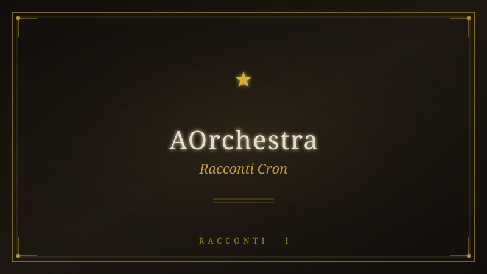

10 Racconti — AOrchestra (Cron)#

Fonte: 10-racconti-aorchestra-cron.pdf
AORCHESTRA — 10 Racconti dei Monti
Sabini
Produzione orchestrata · Pattern AOrchestra (Φ quadrupla)
Cerchio mesopotamico: serpente (T evere) → stagno (Gilgamesh) → ulivo (pianta
insegnata)
Φ₁ — La Pianura non è una
Sub-agente Φ = ⟨I: "Riscrivi il racconto con la critica sociale della Pianura come
centro gravitazionale che contamina ogni stazione", C: {stazione: PIANURA,
contaminazione: Han dello spettacolo, Baudrillard, simulacro, occhio che non vede
perché tutto è mostrato}, T: {scrittura saggistico-narrativa, densità concettuale,
paratassi incalzante}, M: {stesso modello}⟩
L'Itinerrante lascia la Pianura in una mattina di luglio che sa di resina e di cose non
mantenute.
Nessuno lo saluta. La Pianura non saluta chi se ne va: continua a ronzare, a
comprare, a inginocchiarsi davanti ai suoi schermi accesi. È un luogo dove la luce
non si spegne mai — e proprio per questo nessuno vede più niente. Dove tutto è
mostrato, niente appare. La Pianura non nasconde i suoi crimini: li pubblica, li
illumina, li commenta, li spiega, li archivia. E la spiegazione è la sua forma più
educata di oblio. Le telecamere riprendono tutto — dalla guerra al concerto, dalla
frana alla ricetta — e nel riprendere, neutralizzano. Perché un evento filmato non è
più un evento: è un contenuto. E un contenuto non chiede giustizia: chiede like. La
Pianura ha trasformato il dolore in spettacolo, la verità in opinione, la coscienza in
algoritmo. Ha dato a ogni cosa un prezzo, e a ogni prezzo una giustificazione. Il suo
occhio non dorme e non giudica: conta. Conosce di ogni abitante il passo, lo
sguardo, l'acquisto, il silenzio, e delle infinite cose che sa, nessuna è un nome vero.
Conosce i dati, non le persone. Conosce i profili, non le anime. Ha parole per ogni
cosa, la Pianura, e ogni parola è una porta murata: chiama danno collaterale dove
morivano bambini, flessibilità dove si perdevano le case, sicurezza dove cresceva
l'occhio che guarda senza essere visto. Chiama crescita lo sfruttamento, libertà il
consumo, connessione la sorveglianza. La chiamano vita. Ma la vita è ciò che resta
quando smetti di essere un ingranaggio — e nessuno, laggiù, ha ancora smesso.
L'Itinerrante non fugge. Chi fugge crede ancora al gioco: corre lungo il tabellone, e il
tabellone è fatto anche di vie di fuga. Lui ha compiuto l'unico gesto che il tavolo non
contempla — si è alzato. Porta poco: uno zaino, un bastone, e un debito che non si
misura in moneta: il nome di una donna, tagliato una sera da un documento, per
ragioni di spazio. Non d'inchiostro: di spazio. Quello spazio che nella Pianura è la
merce più rara, perché ogni centimetro è saturo di messaggi, di pubblicità, di
notifiche, di richieste. Il nome di lei non entrava nel modulo. Così l'hanno tagliato. E
lui non ha protestato — perché nella Pianura non si protesta: si compila. Si adegua.
Si ottimizza. Si scrolla oltre.
Lungo la Via T ancia, il bosco si chiude alle sue spalle come una porta che nessuno
potrà più aprire dall'esterno. E nel silenzio che finalmente scende — un silenzio che
la Pianura non conosce, perché ha paura del silenzio e lo riempie di musica, di
podcast, di notifiche, di qualsiasi cosa purché non si senta il vuoto — l'Itinerrante
sente per la prima volta il suono dei propri passi. Non li conta: li ascolta. Ogni passo
è una dichiarazione di assenza. Ogni passo è un profilo che si disattiva.
Silvano lo accoglie con uno sguardo che non ha bisogno di presentazioni. Vive in una
casa di pietra, coltiva un orto che non forza, parla quando le parole servono e tace
quando il silenzio dice di più. Non ha telefono. Non ha account. Non ha un punteggio
di affidabilità. Eppure esiste — più di chiunque nella Pianura, dove esistere significa
essere tracciati, e dove essere tracciati significa essere vivi. Silvano è vivo in un
modo che la Pianura ha reso impossibile: è vivo senza testimoni. «Un deserto, una
volta», dice. «Stavo morendo di sete. Un corvo mi ha guardato e ha gracchiato — e
in quel gracchio ho sentito il mio nome. Quello di prima. Quello che non mi ha dato
nessuno. E ho capito che non stavo morendo: stavo cambiando mantello. L'avevo
già fatto. T ante volte. In un altro corpo, in un altro tempo, in un'altra città del mazzo.
E ogni volta la Pianura mi riprendeva — con un altro nome, un'altra faccia, un'altra
vita — perché la Pianura è paziente. La Pianura ha tempo. Sa che prima o poi ti
stanchi di essere libero e torni a inginocchiarti davanti a chi ti promette sicurezza in
cambio dell'anima. Ma io ho smesso di tornare. Non c'è nessun segreto. Non c'è
nessuna tecnica. C'è solo una decisione che si prende ogni giorno, ogni ora, ogni
respiro: di non ricominciare a giocare.»
La salita è dura, ma non è la difficoltà fisica il problema: è il silenzio. La mente,
abituata al rumore costante della Pianura — le notifiche, i messaggi, le email, i feed,
le storie, i reel, i post, i commenti, le reazioni — non sa stare in silenzio. Produce
rumore da sola. Inventa dialoghi, ripete frasi, scrollerà mentali, conteggi, valutazioni.
La mente è l'ultimo altoparlante della Pianura, installato direttamente nel cranio, e
non si spegne facilmente. Parla con la voce del buonsenso — che è la lingua che il
potere usa quando ha già vinto: fermati, torna giù, questo non serve a niente, non
stai producendo niente, non stai ottimizzando niente, non stai accumulando niente,
stai solo camminando, e camminare è improduttivo. Ma l'Itinerrante continua,
perché ha scoperto che il silenzio non è un nemico: è lo spazio in cui il corpo
ricomincia a parlare. E il corpo, quando parla, dice cose che la mente non ha mai
saputo.
Sulla cresta, il vento lo attraversa come se fosse trasparente. E qui succede. Non è
un pensiero, non è un'emozione: è uno spostamento, come se qualcuno gli avesse
preso gli occhi e li avesse posati tre passi a sinistra. Vede la Pianura dall'alto — e
vede che non è una. Sotto la città di vetro affiorano le altre: la città di mattoni cotti
fra i due fiumi, la città di marmo con le aquile, la città di pietra con le torri. Stessa
griglia. Stesse regole scritte da mani che non giocano. Stesso banco che vince da
cinquemila anni. Cambia soltanto il materiale del tavolo: prima legno, poi marmo,
poi acciaio, poi vetro, poi pixel. Cambia il nome degli dèi sulla porta: prima Giove,
poi Cristo, poi Ragione, poi Progresso, poi Mercato, poi Algoritmo. L'Impero non è
mai caduto: ha soltanto cambiato materiali. La divinità non è morta: si è fatta
infrastruttura. Non chiede più sacrifici: chiede attenzione, che è la stessa cosa con
meno sangue e più polvere, più scorrere, più dimenticare. E dentro ogni città —
questa è la rivelazione che lo spacca in due — c'è lui. Lo scriba col calamo, il
funzionario col sigillo, il bancario col calcolatore, il consulente con le slide. Sempre la
stessa schiena china sullo stesso tavolo, sempre a produrre niente per nessuno,
sempre certo che quella fosse la prima e unica vita, sempre convinto che il gioco
fosse giusto perché l'avevano chiamato lavoro, dovere, progresso, normalità. Il
tavolo ha bisogno che tu lo creda: un giocatore che ricorda le partite precedenti
comincia a fare domande sul mazzo. Ma lui, adesso, ricorda. E scopre che la Pianura
ha vinto non perché fosse più forte, ma perché ha convinto tutti che non ci fosse
alternativa. Ha chiuso ogni porta dicendo che era l'unica stanza.
Alle Pozze del Diavolo, l'acqua è nera come l'inchiostro dei contratti che la Pianura fa
firmare senza leggere. L'Itinerrante si china e vede il nome tagliato: Amal. Non un
fantasma: un debito. La Pianura gli ha insegnato a contare tutto tranne ciò che
conta. Poi l'acqua mostra Gilgamesh — l'uomo che per primo ha capito che la
Pianura mente, che la morte non è la fine, che il corpo è un prestito, che il tavolo si
può lasciare. Gilgamesh ha cercato l'immortalità e ha trovato un serpente.
L'Itinerrante, adesso, capisce che il serpente non era un ladro: era un insegnante.
Sotto la cascata, il freddo lo disseziona. Non c'è un io che ha freddo: c'è freddo. Non
c'è un io che respira: respira. L'ultimo residuo della Pianura — quell'identità
costruita, quel profilo, quel nome, quel punteggio — si dissolve nell'acqua. Non
viene distrutto: viene visto per quello che è — l'ultimo prodotto della macchina,
l'ultimo ingranaggio, l'ultimo anello. E nel momento in cui è visto, smette di esistere.
Ciò che resta non ha coordinate, non ha data di nascita, non ha codice fiscale, non
ha password, non ha account. Non è. È senza essere qualcuno. È la presenza che la
Pianura non può tracciare perché non ha dati su di essa — l'unica vera libertà in un
sistema che ha trasformato la libertà in una scelta tra prodotti.
All'ulivo, la sera. Il ramo nuovo esce dalla spaccatura più profonda della corteccia —
quella fatta dalla notte in cui ha tagliato il nome di Amal. La pianta di Gilgamesh non
restituiva la giovinezza a chi la mangiava: la insegnava a chi la guardava. Non è mai
stata perduta: cresce dalle spaccature, da sempre, ovunque qualcosa accetti di
spaccarsi. L'Itinerrante la guarda. E in quello sguardo — senza telefono, senza
notifica, senza like, senza condivisione — accade l'unica cosa che la Pianura non può
vendere: la presenza totale. Il contatto diretto con ciò che è, senza intermediari. La
Pianura ha costruito un impero di intermediari — schermi, app, piattaforme,
algoritmi — tra l'uomo e la realtà. E l'Itinerrante, adesso, li ha rimossi tutti. Uno per
uno, passo dopo passo, spogliandosi come sotto la cascata.
La Pianura continua a ronzare laggiù, in fondo alla valle. Continua a comprare, a
vendere, a tracciare, a profilare, a classificare. Continua a chiamare vita ciò che è
sopravvivenza, e libertà ciò che è scelta tra prodotti. Continuerà anche senza di lui.
Lo rimpiazzerà con un altro profilo, un altro consumatore, un altro ingranaggio. Ma
lui non è più lì. Il tavolo ha perso un giocatore — e non se n'è accorto. È così che si
vince: non battendo il banco, ma smettendo di giocare. Non distruggendo la
macchina, ma uscendo dal suo campo visivo. La Pianura può tracciare tutto tranne
chi ha smesso di esistere per lei.
La voce che parla adesso non è la sua: è più antica, più vasta, più vera. Non dice: io
ho vinto. Dice: io sono la tempesta. E la tempesta non vince: passa. Attraversa.
Libera. E quando passa, qualcosa — un ramo, un uomo, un mondo — ricomincia
dalla spaccatura.
Ed è così — non con un urlo, non con un proclama, non con un post — che si torna a
casa.
Φ₂ — La Porta Murata
Sub-agente Φ = ⟨I: "Riscrivi il racconto con il corpo come porta murata che si riapre
durante la salita", C: {stazione: SALITA, contaminazione: anamnesis del piede,
memoria muscolare, corpo tradito e riscoperto}, T: {scrittura sensoriale, fisica, anti-
intellettuale, presente storico}, M: {stesso modello}⟩
L'Itinerrante lascia la Pianura in una mattina di luglio. Non lo sa ancora, ma non sta
lasciando un luogo: sta reclamando un corpo.
Per tutta la vita della Pianura, quel corpo è stato un oggetto. Non il suo oggetto —
l'oggetto di qualcun altro. Dei medici che lo hanno misurato, dei marchi che lo hanno
vestito, degli spot che lo hanno desiderato, dei social che lo hanno esibito, dei datori
di lavoro che lo hanno ottimizzato, degli algoritmi che lo hanno tracciato. Il suo
corpo era una risorsa da massimizzare, una facciata da curare, un veicolo da
spostare, una macchina da manutenere. Gli hanno venduto il conteggio dei passi, la
qualità del sonno, le calorie bruciate, i minuti di meditazione, i grammi di proteine, i
millilitri di acqua. Ogni funzione era un dato. Ogni dato era un confronto. Ogni
confronto era un'ansia. E lui ha passato anni a migliorare i numeri senza mai
chiedersi chi fosse il proprietario del corpo che quei numeri descrivevano. Ha
creduto di essere il grafico, dimenticando che il grafico non è mai il territorio. Ha
creduto di essere il dato, dimenticando che il dato è solo l'ombra di qualcosa che
vive fuori dalla portata di ogni sensore.
Poi, sulla prima salita della Via T ancia — una carrareccia che si inerpica subito, senza
preavviso, senza rampe di riscaldamento, senza istruttori, senza app — il corpo
comincia a parlare.
E non dice ciò che l'Itinerrante si aspetta.
I polmoni bruciano. Il cuore accelera. I muscoli delle cosce tremano sotto uno sforzo
che la Pianura non aveva mai richiesto. La Pianura non chiede sforzo: chiede
acquisto. La fatica vera non si compra — si incontra, come si incontra un muro che
non sapevi esistesse, e che esisteva eccome, solo che la Pianura lo aveva
tappezzato di specchi per farti credere che fosse un passaggio. Il sudore cola sulla
fronte, e l'Itinerrante sente ogni goccia come una piccola rinuncia, una piccola
liberazione: ogni goccia è un legame in meno con il mondo di sotto, un giuramento
in meno da mantenere, una password in meno da ricordare. La mente urla. Dice le
stesse cose che ha sempre detto: non ce la fai, non sei tagliato, non sei abbastanza
forte, c'è un bar più in basso, puoi tornare, nessuno ti giudicherà, il fallimento è
un'opzione, la resa è una strategia. Ma la mente è l'ultimo altoparlante della
Pianura, installato nel cranio come un chip che nessuno ha chiesto di impiantare. La
mente parla con la voce del buonsenso — e il buonsenso, l'Itinerrante lo sa adesso,
è la lingua che il potere usa quando ha già vinto. Non la violenza: il potere non ha
più bisogno di violenza. Ha bisogno di te che ti fermi da solo. Di te che ti convinci da
solo. Di te che abbassi lo sguardo da solo. E la mente è il suo miglior soldato.
Ma il corpo non ascolta la mente. Il corpo sale.
E in certi tornanti — quando la schiena si flette per superare una roccia, quando il
piede cerca l'appoggio su una pietra instabile, quando la mano afferra un ramo per
bilanciarsi — i piedi trovano l'appoggio prima che gli occhi lo vedano. Come se la
pianta del piede conoscesse questa pietra. Come se le dita ricordassero questo
ramo. Come se il corpo avesse una memoria che la mente non ha mai avuto, una
memoria più antica delle parole, più antica dei nomi, più antica della Pianura stessa.
Una memoria che non si esprime in pensieri ma in contrazioni, in equilibri, in pesi
distribuiti, in respiri sincronizzati. Il corpo è una biblioteca che la mente non ha mai
imparato a leggere.
Per tutta la vita della Pianura, l'Itinerrante ha creduto che la conoscenza fosse nella
mente. Nei libri che leggeva, nei corsi che seguiva, nei video che guardava, nei
podcast che ascoltava, nei post che salvava per dopo. Ha accumulato informazioni
come la Pianura accumula rifiuti — in discariche sempre più vaste, sempre più
tossiche, sempre più ingestibili. Ha creduto che sapere fosse ricordare, e che
ricordare fosse archiviare, e che archiviare fosse possedere. Ma qui, su questa salita
che non concede tregua, scopre che la vera conoscenza non è nella mente: è nei
muscoli, nelle ossa, nei tendini, nella pelle. È nella capacità del corpo di trovare la
strada senza averla mai percorsa — come gli uccelli migratori che sanno dove
andare senza aver mai visto la meta. L'animale dentro di lui, quello che la Pianura
ha sedato con schermi e zuccheri e comfort, si sta risvegliando. E non è
confortevole. È scomodo, doloroso, spaventoso. Ma è vivo.
Silvano, che cammina dietro di lui con un passo che sembra non consumare energia,
parla senza fiato: «Il corpo sa cose che la mente ha dimenticato. Il corpo non ha mai
smesso di sapere chi sei. È la mente che si è fatta riempire. Hanno riempito la tua
mente di cose da fare, da comprare, da temere, da desiderare — e in quel
riempimento, il corpo è stato zittito. Non ucciso: zittito. Messo in attesa, come una
musica in pausa, ancora lì, ancora pronta a ripartire, ma nessuno premeva play. La
Pianura preme solo pausa. Perché un corpo in ascolto è pericoloso: un corpo in
ascolto sente cose che la Pianura non può controllare. Sente la verità prima che la
mente la razionalizzi. Sente la menzogna prima che la parola la travesta. Sente la
presenza di un altro corpo, di un altro dolore, di un'altra gioia — e in quel sentire,
diventa solidale. E la solidarietà è il vero nemico della Pianura. Non la ribellione: la
solidarietà. La ribellione la si può comprare, incanalare, svendere. La solidarietà no:
la solidarietà è il corpo che riconosce un altro corpo, al di là di ogni parola, al di là di
ogni bandiera, al di là di ogni confine.»
L'Itinerrante ascolta con tutto il corpo. Le parole di Silvano non entrano dalle
orecchie: entrano dalla pelle, si depositano nei muscoli, si fanno strada nelle ossa.
Capisce che Silvano non sta insegnando niente di nuovo: sta solo attivando una
conoscenza che era già lì, sepolta sotto strati di programmazione. Il corpo ricorda. Il
corpo non ha mai dimenticato. È la mente che è stata riscritta, sovrascritta,
aggiornata come un software, finché la versione originale — quella che sapeva chi
era prima dei nomi, prima delle date, prima dei codici — è stata cancellata. Non del
tutto: in qualche angolo del sistema, in qualche settore del cervello che la Pianura
non ha ancora colonizzato, una copia di backup esiste ancora. E la salita, adesso, sta
eseguendo il ripristino.
Sulla cresta, il vento lo attraversa. E il corpo, per la prima volta, non oppone
resistenza. Non c'è un io che viene attraversato dal vento: c'è solo attraversamento.
Il corpo non è più un contenitore separato dal mondo: è una membrana, un confine
permeabile, una soglia. Ogni cellula vibra a una frequenza che non è solo sua.
L'Itinerrante sente il mare prima di vederlo — nella salinità dell'aria, nel
cambiamento di pressione, in qualcosa che la pelle riconosce come l'orizzonte. Vede
le città sovrapposte non con gli occhi ma con la colonna vertebrale: le sente come
stratificazioni geologiche, come anelli di crescita, come sedimenti di tempo
depositati nello stesso punto.
Ma non è la visione il centro di questa storia. Il centro è ciò che accade dopo: la
discesa verso le Pozze, quando il corpo, ormai risvegliato, comincia a sentire cose
che la mente non aveva mai registrato. L'odore della terra bagnata. Il fruscio delle
foglie che non sono uguali — ogni albero ha il suo fruscio, la sua firma acustica, la
sua lingua segreta. La temperatura dell'aria che cambia di due gradi scendendo nel
fosso. Il suono dell'acqua che arriva prima come vibrazione nell'aria, poi come
tremore nel terreno, poi come presenza nella pelle. Il corpo non è più uno
strumento: è un medium. Non produce: riceve. Non agisce: partecipa.
Alle Pozze, l'Itinerrante si china. Non con la testa: con tutto il corpo, piegando la
schiena in un arco che la Pianura non gli aveva mai permesso — perché nella
Pianura la schiena si tiene dritta, si presenta bene, si vende meglio. L'acqua è
fredda, ma non è la temperatura: è la consistenza. L'acqua non è un liquido: è una
superficie di contatto tra lui e ciò che è stato dimenticato. Il corpo entra in risonanza
con l'acqua come un diapason con un altro diapason — e nella vibrazione condivisa,
il nome di Amal emerge non come ricordo ma come sensazione fisica: un peso sullo
sterno, un nodo nella gola, una tensione tra le scapole, un vuoto nella pancia. La
mente aveva rimosso il nome. Il corpo lo aveva custodito. Il corpo non ha mai
smesso di sapere.
La cascata è il punto di non ritorno non per la mente — la mente aveva già ceduto
chilometri prima — ma per il corpo. L'Itinerrante si spoglia, e mentre i vestiti cadono,
sente ogni indumento come uno strato di programmazione che si rimuove. I
pantaloni non sono pantaloni: sono le regole sociali. La maglietta non è una
maglietta: è l'immagine che gli altri devono vedere. Le scarpe non sono scarpe: sono
il percorso obbligato, la strada tracciata, il sentiero già battuto. Le mutande non
sono mutande: sono l'ultimo pudore, l'ultima concessione al giudizio altrui, l'ultima
voce che dice non mostrarti completamente, lascia qualcosa di coperto. E anche
quello cade.
Entra nell'acqua. Il freddo è una capriola. Non un dolore: un capovolgimento. Il
mondo che era in alto diventa in basso. La mente che era al comando diventa
spettatrice. Il corpo prende il controllo e fa cose che la mente non aveva autorizzato:
piegarsi, immergersi, trattenere il respiro, lasciarsi colpire dall'acqua. Il corpo non
chiede permesso. Il corpo sa. Sa che l'unico modo per uscire dalla prigione è
attraversare il freddo — non pensarlo, non analizzarlo, non raccontarlo, non
metaforizzarlo. Attraversarlo. Come si attraversa un dolore. Come si attraversa una
perdita. Come si attraversa una nascita.
L'io — l'inquilino, il narratore, il produttore di significato, il costruttore di storie, il
difensore del sé — non c'è più. Non è annegato: è evaporato. Sotto la cascata non
c'è un uomo e un'acqua: c'è un unico movimento, e quel movimento è senza nome,
senza età, senza biografia, senza curriculum, senza profilo, senza punteggio. Il corpo
ha vinto. Non contro qualcosa: a favore di tutto. Il corpo non ha nemici: ha solo
assenze. E sotto la cascata, ogni assenza — della mente, del linguaggio, della
Pianura, del debito — diventa presenza. Non presenza di qualcosa: presenza pura.
Essere senza essere qualcuno. Essere senza dover essere.
Quando esce, Editta porge un telo. Lui lo prende. Ma il gesto è diverso: non c'è
separazione tra la mano che porge e la mano che riceve. C'è solo un movimento,
come la cascata, come la vita, come tutto ciò che accade quando nessuno lo guarda
per riprenderlo.
All'ulivo, il corpo riconosce l'albero come riconoscerebbe un parente. La corteccia
spaccata è la stessa spaccatura che sente dentro di sé — quella che il freddo ha
aperto, quella che il viaggio ha allargato, quella che la presenza ha reso visibile. Il
ramo nuovo non è un simbolo: è un'estensione del suo braccio, un dito che indica la
direzione che il corpo ha già preso da solo, senza che la mente fosse consultata. La
pianta insegnata non si guarda: si sente. Si sente nelle ossa, nel midollo, nel fiato. Si
sente come si sente la propria mano quando non si pensa a muoverla — si muove
da sola, perché è viva, perché è connessa, perché fa parte di un tutto che la mente
non può comprendere ma che il corpo abita da sempre.
«Io sono la tempesta», dice la voce. Ma non è una parola: è una vibrazione che sale
dal plesso solare, attraversa la gola, esce dalle labbra senza passare dal cervello. La
tempesta non è un concetto: è una temperatura, una pressione, un movimento. Il
corpo è la tempesta. Non la contiene: la è. Da sempre. Solo che la Pianura lo aveva
convinto di essere una goccia — e le gocce non sanno di essere il mare.
Il corpo torna a casa. Non la casa con i muri: la casa di carne e ossa e respiro e
sangue e battito e silenzio. La casa che non ha mai lasciato — solo dimenticata. E
adesso, dopo la salita, dopo le Pozze, dopo la cascata, dopo l'ulivo, il corpo si
ricorda.
E si siede sulla pietra. Fermo. Come Silvano il primo giorno. Senza aspettare niente.
Perché non c'è niente da aspettare quando sei finalmente dove sei sempre stato: nel
corpo che sei, nel corpo che sei sempre stato, nel corpo che la Pianura non potrà
mai avere.
Φ₃ — La Visione sulla Cresta
Sub-agente Φ = ⟨I: "Riscrivi il racconto con la visione delle città sovrapposte come
centro, ogni altra stazione è un'eco di quella rivelazione", C: {stazione: CRESTA,
contaminazione: gnosi dickiana, Impero materiali, maschere, trasmigrazione, spazio
dietro i volti}, T: {scrittura visionaria, densità ontologica, presente senza tempo,
frasi che si aprono l'una nell'altra}, M: {stesso modello}⟩
L'Itinerrante lascia la Pianura in una mattina di luglio, ma non lo sa ancora: non sta
andando verso un luogo. Sta andando verso una visione. T utto il viaggio — la salita,
le Pozze, la cascata, l'ulivo — non sono tappe geografiche: sono le condizioni di
possibilità di un unico istante, l'istante in cui ciò che è sempre stato lì, davanti ai
suoi occhi, finalmente si mostra.
Non sapeva che da qui si vedesse il mare. Non sapeva niente di quello che si vede.
Aveva passato trent'anni nella Pianura a guardare schermi che mostravano immagini
del mondo — e non aveva mai visto il mondo. Aveva visto rappresentazioni,
fotografie, video, dirette, storie, reel, post, articoli, documentari. Aveva visto il
mondo attraverso migliaia di mediazioni, come si guarda il sole attraverso un vetro
fumé: ne vedi la sagoma, non la sostanza. E aveva creduto che quello fosse vedere.
Ma la Pianura confonde vedere con consumare: più immagini consumi, meno vedi. Il
suo occhio è un apparato digerente, non un organo di senso. Trasforma la realtà in
contenuto, il contenuto in esperienza, l'esperienza in ricordo, il ricordo in polvere. E
alla fine del processo, non resta niente — solo la prossima immagine da consumare.
La Pianura ha trasformato la percezione in un nastro trasportatore: sempre avanti,
sempre nuovo, sempre uguale.
Sulla cresta del Monte T ancia, a 1.292 metri, il vento lo attraversa come se non ci
fosse. E qui succede.
Non è un pensiero. Non è un'emozione. Non è un ricordo. Non è un'allucinazione. È
uno spostamento — come se qualcuno gli avesse preso gli occhi e li avesse posati
tre passi a sinistra. Ma non è nemmeno uno spostamento spaziale: quella sinistra
non è una direzione, è una soglia. È il punto in cui la percezione normale cessa di
essere normale e diventa — per la prima volta — reale. L'Itinerrante non vede più
con gli occhi: vede con qualcosa che non ha nome, che non sta in nessuna mappa
del corpo, che non è insegnato in nessuna scuola, che non è potenziato da nessuna
app. Un modo di vedere che la Pianura ha atrofizzato come un muscolo inutilizzato,
perché un muscolo che si usa troppo diventa forte, e un occhio che vede troppo
diventa pericoloso.
Vede la Pianura dall'alto. E vede che non è una. Non è una città: è un palinsesto.
Strati di tempo compressi sullo stesso territorio, come le pagine di un libro bruciato
che si possono ancora leggere sovrapponendole alla luce. Sotto la città di vetro —
quella che conosce, quella in cui è nato, quella che lo ha prodotto come un numero
di serie — affiorano le altre. La città di mattoni cotti fra due fiumi, di
duemilacinquecento anni fa, con le mura così alte che gli dèi ci camminavano sopra,
con le strade lastricate che ancora esistono sotto l'asfalto, con le fogne che ancora
scorrono sotto i grattacieli. La città di marmo con le sue aquile, quella che ha
conquistato il mondo e poi è stata conquistata dal silenzio, i cui monumenti sono
diventati cave, le cui leggi sono diventate dimenticanza. La città di pietra con le sue
torri, quella delle signorie e dei campanili, delle fazioni e degli intrighi, dei veleni e
delle madonne. E più giù ancora, appena visibile, la città di fango con le sue divinità
senz'occhi, quella dei primi insediamenti, delle prime barriere, delle prime divinità
domestiche — piccole, private, animali.
T utte hanno la stessa pianta. Lo stesso foro centrale dove qualcuno parla e tutti
ascoltano. La stessa griglia di strade che partono dal centro e vanno verso la
periferia, dove la voce si affievolisce e il silenzio ricomincia. Lo stesso mercato. Lo
stesso tempio. Lo stesso palazzo. Lo stesso muro. Le stesse porte. La Pianura crede
di essere nuova, crede di essere diversa, crede di aver superato le città che l'hanno
preceduta. Ma chi ha costruito la città di vetro ha usato lo stesso stampo della città
di fango: ha solo cambiato i materiali. Ha sostituito la pietra con il calcestruzzo
armato, il calcestruzzo con l'acciaio e il vetro, l'acciaio e il vetro con i pixel. Ma la
forma è identica. L'Impero non è mai caduto: ha soltanto cambiato materiali. È
sopravvissuto a tutte le invasioni perché non aveva un corpo da invadere: aveva
un'idea, e le idee non muoiono quando cadono le mura. Cambiano mura. Cambiano
nome. Cambiano dio. Ma restano.
I nomi degli dèi sulla porta sono diventati nome di algoritmi nella tasca. La divinità
non è morta: si è fatta infrastruttura. Non chiede più sacrifici di sangue: chiede
attenzione, che è la stessa cosa con meno pulizie da fare. Il dio di ieri voleva agnelli:
il dio di oggi vuole occhi puntati, pollici che scorrono, cervelli che si spengono. Il dio
di ieri prometteva paradiso: il dio di oggi promette rilevanza. Il dio di ieri minacciava
inferno: il dio di oggi minaccia l'oblio algoritmico, la cancellazione dalla timeline, la
morte per irrilevanza. Hanno solo cambiato il nome della dannazione: prima era
fuoco, oggi è shadowban. Ma la struttura è identica. Il timore è identico.
L'inginocchiamento è identico.
E dentro ogni città — questa è la rivelazione che lo spacca in due, che lo apre come
un frutto, che lo rende trasparente a se stesso — c'è lui. Non un suo simile: lui
stesso. La stessa anima, lo stesso nucleo, rinchiuso in un corpo diverso, in un tempo
diverso, in un mantello diverso. Lo scriba col calamo sulla tavoletta d'argilla, il
funzionario col sigillo sul rotolo di papiro, il burocrate con la penna d'oca sulla
pergamena, l'impiegato con la macchina da scrivere sulla carta carbone, il
consulente con il laptop sul tavolo di vetro. Sempre la stessa schiena china. Sempre
lo stesso tavolo. Sempre la stessa convinzione che quella fosse la prima e unica vita,
che il lavoro fosse necessario, che il sistema fosse giusto, che l'ingranaggio fosse
onorevole. Sempre la stessa certezza che domani sarebbe stato meglio, che la
pensione avrebbe ripagato i sacrifici, che i figli avrebbero avuto una vita più facile.
Sempre la stessa menzogna, vestita con i panni della speranza. Il tavolo ha bisogno
che tu lo creda: un giocatore che ricorda le partite precedenti comincia a fare
domande sul mazzo. Comincia a chiedersi perché le regole sono scritte in una lingua
che nessuno capisce, perché il banco vince sempre, perché le fiches sono di plastica
e i debiti sono veri.
E lui, adesso, ricorda. Non sa come — forse l'altitudine, forse la mancanza di
ossigeno, forse la fine del rumore di fondo — ma ricorda. Ricorda la prima partita,
quando ha creduto che giocare fosse una scelta. Ricorda la seconda, quando ha
scoperto che il mazzo era truccato e ha pensato di poterlo battere lo stesso. Ricorda
la terza, quando ha smesso di cercare di vincere e ha cominciato solo a non perdere
troppo. Ricorda tutte le partite in cui ha guardato dall'altra parte mentre qualcuno
veniva portato via dal tavolo. Ricorda tutte le volte che ha detto non sono affari
miei. Ricorda tutte le volte che ha firmato senza leggere, scrollato oltre senza
vedere, accettato senza capire. La Pianura gli ha insegnato che la partecipazione è
colpevolezza, e che l'unico modo per non essere colpevole è non partecipare. Ma lui
ha partecipato. Ha giocato. Ha perso. E la sua colpa non è di aver perso: è di aver
continuato a giocare molto dopo aver capito che il gioco era truccato.
Poi vede se stesso nell'ultimo giro. Le maschere che ha indossato: il manager che
gestiva il personale come risorse da ottimizzare, il direttore che tagliava costi e
persone con la stessa indifferenza, il figlio che non ha mai detto le cose che doveva
dire, l'artista che produceva contenuti per piattaforme che lo pagavano in visibilità,
il viaggiatore che collezionava luoghi come francobolli, il consumatore che riempiva
il vuoto con oggetti. Strati di roccia sedimentaria. Ognuna vera e falsa insieme.
Ognuna necessaria per sopravvivere laggiù. Ognuna inutile quassù. E dietro le
maschere — niente. Nessun volto. Solo spazio. Non un vuoto spaventoso: uno spazio
calmo, senza confini, senza etichette, senza nome. Uno spazio che aspetta di essere
riempito non da una maschera ma dalla presenza stessa. L'Itinerrante ha passato
una vita a cercare il suo vero volto, senza capire che non c'è nessun volto. Il volto è
uno spazio, e lo spazio non ha bisogno di essere riempito: ha bisogno di essere
abitato.
Questa scoperta — che non c'è un sé da trovare ma solo uno spazio da abitare — è
la sola conoscenza che la Pianura non può contenere. Perché la Pianura vive di
identità, di profili, di marchi, di ruoli, di definizioni. Senza di loro, collassa. L'identità
è il suo carburante. E l'Itinerrante, sulla cresta, ha scoperto che l'identità non esiste
— è solo un utile accordo sociale, una scorciatoia per non dover affrontare
l'immensità di essere nessuno. Ma essere nessuno, ha scoperto, non è un difetto: è il
prerequisito per essere tutto. Perché solo chi non è nessuno può diventare qualsiasi
cosa. Solo chi non ha un volto può guardare in tutte le direzioni. Solo chi non ha un
nome può sentire il nome che nessuno ha dato.
Editta dice, con la voce ferma: «Vivere il presente. Stare in pace con la sofferenza.
Trovare la luce dentro la tempesta. Il resto è bagaglio.» Non sono massime: sono
istruzioni per abitare lo spazio che la visione ha aperto. Vivere il presente: non il
passato della memoria, non il futuro dell'ansia, ma questo preciso istante in cui il
vento soffia e la pelle lo sente. Stare in pace con la sofferenza: non eliminarla, non
negarla, non trasformarla in spettacolo — accettarla come una temperatura
dell'anima. Trovare la luce dentro la tempesta: non cercare un rifugio, non aspettare
che passi — essere la tempesta stessa, e nella sua furia riconoscere la stessa
energia che muove le stelle.
Alle Pozze, l'acqua nera riflette non il suo volto ma lo spazio che ha scoperto. Il
nome di Amal emerge non come colpa ma come soglia. Gilgamesh non è
un'antenato da piangere: è lui stesso che si sveglia con le mani vuote e scopre che il
vuoto non è una perdita ma un'apertura — l'apertura attraverso cui entra la luce.
Alla cascata, il freddo non gli toglie l'identità: gli toglie la domanda sull'identità. Non
c'è più un chi sono io: c'è solo sono. L'io non si perde: si realizza come spazio. E lo
spazio non ha bisogno di definirsi.
All'ulivo, il ramo nuovo esce dalla spaccatura che la visione ha aperto in lui. E lui sa,
senza aver bisogno di saperlo, che la pianta rubata a Gilgamesh non è mai stata
perduta. Cresce nelle spaccature. Cresce lì dove la visione ti spezza in due e ti
mostra — per un istante — che non c'è niente da vedere. Solo spazio. Solo presenza.
Solo la tempesta che ha smesso di cercarsi.
Io sono la tempesta. La tempesta non cerca: passa. E passando, rende visibile ciò
che era nascosto: l'unico volto possibile non è un volto. È la capacità di guardare
senza dover essere guardati. È la libertà di chi ha smesso di avere un'immagine da
difendere. È lo spazio, finalmente abitato, che la Pianura non può vendere perché
non sa nemmeno che esista.
Sulla cresta, la visione è finita. Ma quello che ha aperto — lo spazio — non si
chiuderà più. L'Itinerrante scende dalla montagna portando con sé l'unica cosa che
la Pianura non può tracciare: l'assenza di un profilo. È tornato senza tornare: è
rimasto lassù, dove non c'è niente da vedere perché tutto è già visibile. E la
tempesta, stasera, torna a casa — non in un luogo, ma nello spazio che ha sempre
abitato senza saperlo.
Φ₄ — Il Nome nelle Acque
Sub-agente Φ = ⟨I: "Riscrivi il racconto con le Pozze come rivelazione centrale —
tutto il viaggio converge nell'incontro con l'acqua nera, dove emergono i nomi e le
memorie", C: {stazione: POZZE, contaminazione: Amal + Gilgamesh + mantelli +
Maligno come soglia + Editta come guardiana}, T: {scrittura visionaria, onirica,
densità mitobiografica, incontro con l'acqua come specchio del tempo}, M: {stesso
modello}⟩
L'Itinerrante non sapeva che le Pozze lo aspettavano. Non sapeva di avere un
appuntamento con l'acqua nera, fissato cinquemila anni prima, in un'altra valle, in
un'altra vita, con un altro nome. Ma l'acqua sapeva. L'acqua aspetta sempre.
L'acqua ha la pazienza delle cose che non hanno orologio, che non hanno agenda,
che non hanno scadenza. L'acqua aspetta che tu sia pronto — e quando sei pronto,
non ti chiede il nome. Ti chiede il debito.
La salita era stata solo la preparazione: i muscoli che bruciavano, la mente che
urlava, i piedi che trovavano l'appoggio prima che gli occhi lo vedessero. Il corpo si
stava ricordando come si cammina veramente — non come si cammina nella
Pianura, dove camminare significa spostarsi da un ambiente climatizzato all'altro, da
un mezzo all'altro, da uno schermo all'altro — ma come si cammina quando
camminare è tutto ciò che fai, quando non c'è destinazione che valga più del passo
che la precede. La Pianura ha dimenticato che camminare è un'arte, non un
trasferimento. Ha trasformato il cammino in pendolarismo, il viaggio in consumo,
l'orizzonte in sfondo per selfie. Ma il corpo dell'Itinerrante, dopo chilometri di
silenzio, si stava ricordando un ritmo più antico: quello del cacciatore, del pellegrino,
del fuggiasco, di tutti coloro che camminavano perché restare fermi era più
pericoloso che muoversi.
La cresta era stata la preparazione della mente: la visione delle città sovrapposte, la
scoperta che l'Impero non era mai caduto, la rivelazione che il suo vero volto non
era un volto ma spazio. Ma quella visione, per quanto potente, era ancora una
comprensione — e la comprensione, l'Itinerrante lo scoprirà presto, è solo
l'anticamera della trasformazione. Capire non è cambiare. Capire è come guardare
una mappa: sai dove andare, ma non hai ancora mosso un passo. La trasformazione
richiede un incontro — e l'incontro, alle Pozze del Diavolo, è con l'acqua nera.
Le Pozze non si annunciano: si rivelano. Il sentiero scende ripido nel fosso di
Galantina, e all'improvviso il fragore dell'acqua sostituisce ogni altro suono. Il bosco
si apre, e l'acqua appare — non come la descrivono le fotografie, non come la
vendono le guide turistiche. L'acqua è scura, verdissima, quasi nera nelle conche più
profonde. Non riflette: assorbe. Non invita: mette in guardia. L'Itinerrante sente un
brivido che non è freddo — è una scarica di riconoscimento, come quando entri in
una stanza e senti che qualcuno ti stava aspettando, anche se la stanza è vuota.
L'acqua lo sta aspettando da sempre. Le Pozze del Diavolo hanno ricevuto questo
nome non perché il Maligno abitasse qui, ma perché qui le cose si mostrano per
quello che sono, senza veli, senza mediazioni, senza pietà. E mostrare la verità
senza veli — questo è il Maligno: non il male, ma la rivelazione che la Pianura
chiama male perché non la sopporta.
Editta si ferma sul bordo. La sua voce, quando parla, ha il tono di chi racconta una
storia che le pietre si tramandano da quando le pietre esistono. «Il Maligno, invidioso
di ogni cosa scorre pura, venne a corrompere l'acqua viva. L'acqua lo respinse — ma
non ne uscì intatta. Della lotta conservò la magia oscura e solitaria, come una lama
conserva la tempra del fuoco che l'ha piegata. Per questo il nome è rimasto. Non è
una calunnia: è un avvertimento. Qui non si viene a specchiarsi: qui l'oscurità di
fuori chiama quella di dentro. Chi non ha fatto il cammino ci lascia qualcosa che non
sapeva di portare. Chi l'ha fatto, ci posa qualcosa che non sapeva più come posare.»
L'Itinerrante guarda l'acqua. Sente il richiamo: non una voce, ma una vibrazione,
come un diapason che risuona alla stessa frequenza di qualcosa dentro di lui. Non
ha paura. O meglio: ha paura, ma la paura non è più un motivo per fermarsi. La
Pianura gli ha insegnato che la paura è un segnale d'arresto: se hai paura, non
andare. Ma la montagna gli sta insegnando che la paura è un segnale di presenza:
se hai paura, sei vivo, sei sveglio, sei sull'orlo di qualcosa che conta. La paura non è
il nemico: è il confine. E i confini, l'Itinerrante lo sa adesso, non si evitano: si
attraversano.
Si china sull'acqua. La superficie è così scura che non vede il suo riflesso — vede
qualcos'altro. Vede un nome scritto nell'acqua, come una ferita che non si è mai
rimarginata. Il nome è Amal. Lei era entrata in un documento con quattro parole tra
virgolette, parola salite dal fondo di una terra in guerra — una terra che l'Itinerrante
non ha mai visto, non ha mai toccato, non ha mai conosciuto se non attraverso lo
schermo, attraverso il feed, attraverso il notiziario serale che trasforma la guerra in
intrattenimento, la morte in statistica, il dolore in contenuto. Quattro parole che
qualcuno aveva detto in un'intervista, in una lingua che lui non parlava, in un paese
di cui faticava a trovare la posizione sulla mappa. Parole che raccontavano la perdita
di tutto: la casa, la famiglia, il villaggio, il nome. Parole che qualcuno aveva
giudicato troppo lunghe per il margine del documento. Quattro parole, salvataglie da
un contesto, private del loro corpo, ridotte a citazione. E poi tagliate via. Per ragioni
di spazio. Lui ricorda il numero della nota a piè di pagina — nota 47, era la nota 47,
lo ricorda perché 47 è un numero primo e lui allora pensava che i numeri primi
avessero una dignità speciale — e non ricorda le parole della donna. Ricorda il
contenitore, non il contenuto. Ricorda la struttura, non l'anima. Questa, capisce
chino sull'acqua nera, è la diagnosi esatta della sua malattia: ha imparato a contare
tutto tranne ciò che conta. Ha riempito la testa di numeri, date, cifre, statistiche,
percentuali, quote, obiettivi — e nel riempirla, ha spinto fuori tutto il resto. Le parole
di una donna che perdeva tutto non sono entrate: non c'era spazio. Lo spazio era
occupato da cose più urgenti: il budget, la scadenza, la riunione, la performance
review, la prossima promozione, il prossimo acquisto, la prossima vacanza, la
prossima foto da postare. L'irrilevante aveva occupato tutto lo spazio, lasciando il
rilevante a marcire fuori.
Ma l'acqua non dimentica. L'acqua ha ricevuto quelle parole — attraverso il tempo,
attraverso il ciclo dell'acqua che evapora e cade e scorre e filtra — e le ha custodite,
come custodisce tutto ciò che la Pianura scarta. Il nome di Amal è nell'acqua. Le
quattro parole tagliate sono nell'acqua. E adesso, mentre l'Itinerrante guarda la
superficie nera, le parole risalgono dal fondo come bolle da uno stagno troppo
profondo. Non le sente con le orecchie — le sente con la pelle. Ogni parola è una
vibrazione che attraversa l'aria e si deposita nella sua carne, come le parole di
Silvano si erano depositate nei suoi muscoli durante la salita. E le parole dicono: non
sarò dimenticata. Non sarò un numero. Non sarò una nota. Non sarò un taglio. Io
sono stata qui. Io ho amato. Io ho perso. Io ho pianto. Io esisto.
L'acqua trema. La superficie si increspa, e sotto le increspature emergono altre
sagome. Non sono ricordi — sono presenze. L'Itinerrante le sente come si sente una
stanza piena di gente quando si è ancora nel corridoio: non ne vedi i volti, ma sai
che ci sono. Volti mai incontrati che pure riconosce — come si riconosce la propria
calligrafia in una lettera che non si ricorda di aver scritto. Ogni volta che ha
obbedito. Ogni vita. Ogni mantello. Ogni città del mazzo. La catena non si spezza: si
allunga. E lui, lo scriba, il funzionario, il bancario, il consulente, è stato uno degli
anelli. Non il più forte, non il più debole — uno. Presente. Partecipante. Complice.
Ogni obbedienza è un anello. Ogni silenzio è un anello. Ogni sguardo abbassato è un
anello. E la catena è così lunga che nessuno ne vede più la fine — ma lui, adesso,
seduto sull'acqua nera, ne sente il peso su tutto il corpo. Non è colpa: è
responsabilità. Non è condanna: è riconoscimento. Riconoscere di essere stato parte
della catena è il primo passo per spezzarla. Ma non si spezza con un gesto eroico: si
spezza con la presenza. Con l'essere qui, ora, a guardare l'acqua nera, a tenere lo
sguardo su ciò che emerge.
Poi l'acqua si fa antica. Non più antica di prima: antica in un altro modo, come se la
parola stessa "antica" avesse perso senso, come se il tempo fosse collassato in un
unico presente dove tutto esiste simultaneamente. E in quel presente senza tempo,
l'acqua mostra la scena che aspetta l'Itinerrante da cinquemila anni. Un uomo in riva
a uno stagno, sfinito da un viaggio impossibile, il volto segnato da un lutto che non
si rimargina, le mani che tremano. Ha viaggiato fino ai confini del mondo. Ha
attraversato il mare della morte. Ha incontrato l'unico uomo immortale — l'uomo
che la Pianura chiama Utnapishtim, l'uomo che sapeva che il diluvio non era una
punizione ma un reset, l'uomo che ha capito che la vita si può perdere anche senza
morire. E ha ottenuto ciò che cercava: la pianta della giovinezza. La stringe tra le
mani come si stringe un neonato. Poi si addormenta. Un serpente esce dallo stagno
— lo stesso stagno, la stessa acqua, la stessa vibrazione che adesso vibra nell'acqua
delle Pozze — mangia la pianta, si sbarazza della pelle vecchia, e se ne va nuovo.
L'uomo si sveglia con le mani vuote. E nel suo pianto — disperato, infantile, totale —
l'Itinerrante riconosce il suono della propria anima prima che imparasse a mentire. Il
pianto di chi ha trovato e ha perso. Il pianto di chi ha toccato l'immortalità e si è
svegliato mortale. Il pianto di chi scopre che la vita non si tiene: si vive.
«La prima volta che sei morto, eri Gilgamesh», dice Silvano. È accanto a lui — non si
è accorto di quando è arrivato. La voce è bassa, senza enfasi, come se stesse
constatando un fatto meteorologico. «Non lo sapevi, ma eri tu. Avevi perso l'unico
essere che ti somigliava, Enkidu, l'amico che era più di un fratello, il selvaggio che
avevi civilizzato e che la civiltà aveva ucciso. E in quella perdita hai capito che la
carne è un prestito, che la vita è un intervallo, che tutto ciò che ami ti verrà
strappato via. L'hai inseguita, la pianta. Hai attraversato montagne dove gli uomini-
scorpione ti guardavano senza toccarti. Hai navigato il mare della morte. Hai
supplicato, pianto, promesso. L'hai trovata. E te l'hanno rubata mentre dormivi.
Quella perdita ti ha spezzato in due: una metà è diventata polvere, l'altra è tornata
— in un altro corpo, in un altro tempo, in un altro mantello. E ogni volta cercavi
qualcosa senza sapere cosa. Ogni volta combattevi senza sapere perché. Ogni volta
morivi senza sapere per chi.»
L'Itinerrante ascolta. Le parole di Silvano entrano nell'acqua e tornano moltiplicate,
come se ogni parola generasse mille echi. Capisce che Silvano non sta raccontando
la sua storia — sta raccontando la storia di ogni anima che ha varcato la soglia della
morte ed è tornata, non per scelta ma per necessità, perché il cerchio non era
ancora completo. Il suo compito, in questa vita, non è trovare la pianta: è
riconoscere che la pianta non è mai stata perduta. Il serpente non ha rubato: ha
diffuso. Ha portato la pianta in ogni angolo del mondo, l'ha seminata in ogni
spaccatura. L'immortalità non è un oggetto da possedere: è una conoscenza da
trasmettere. E la conoscenza, l'Itinerrante lo capisce chino sulle Pozze, si trasmette
nello sguardo. Non nei libri. Non nei dogmi. Non nei riti. Nello sguardo. Tra un uomo
che ha visto e un uomo che è pronto a vedere.
Alla cascata, l'acqua lava via l'ultimo residuo della domanda. Sotto il getto gelido,
non c'è più chi sono io o cosa cerco o qual è il mio compito. C'è solo l'acqua che
cade, il corpo che trema, e la certezza — che non è un pensiero ma uno stato fisico
— che ciò che l'acqua nera ha mostrato è vero. Che Amal esiste. Che Gilgamesh
esiste. Che la catena esiste. E che lui, adesso, ne è uscito. Non spezzandola — non si
spezza una catena con la forza — ma sciogliendola, anello dopo anello, guardando
nell'acqua, tenendo lo sguardo.
All'ulivo, la sera è calda. Il ramo nuovo trema nella brezza. E l'Itinerrante guarda
l'albero come ha guardato l'acqua: senza cercare, senza pretendere, senza voler
capire. E nell'acqua dell'ulivo — perché anche gli alberi hanno la loro acqua, la loro
linfa, la loro memoria — vede lo stesso serpente che esce dallo stagno, che mangia
la pianta, che si libera della pelle vecchia. Ma questa volta non lo vede come un
ladro. Lo vede come un maestro. La pianta non restituiva la giovinezza a chi la
mangiava: la insegnava a chi la guardava. Cresce dalle spaccature, da sempre,
ovunque qualcosa accetti di spaccarsi — come l'ulivo, come lui, come l'acqua che
custodisce il nome di tutte le cose perdute.
L'Itinerrante tocca l'acqua del ruscello vicino. È fredda, viva, presente. Sotto le dita,
il nome di Amal continua a scorrere — non più come un debito, ma come un
compagno di viaggio. La tempesta non è lui che grida: è lui che ascolta. È l'acqua
che parla attraverso di lui. È la pianta che cresce nelle sue spaccature. È il serpente
che cambia pelle, ancora una volta, e se ne va nuovo. La tempesta è la voce di tutte
le cose che la Pianura ha dimenticato e che l'acqua custodisce. E quando torna a
casa, non torna da solo: porta con sé tutti i nomi che l'acqua gli ha restituito.
Φ₅ — Il Dio che Uccide e Battezza
Sub-agente Φ = ⟨I: "Riscrivi il racconto con la cascata come unico vero evento —
tutta la tensione converge nel momento in cui il freddo disseziona l'io e rivela la
presenza", C: {stazione: CASCATA, contaminazione: stesso freddo/dio, acqua che
uccide e battezza, spoliazione totale, la mente come ultimo altoparlante che si
spegne}, T: {scrittura iniziatica, concentrata, presenza assoluta, presente storico
senza distanza}, M: {stesso modello}⟩
Per tutto il viaggio, l'Itinerrante ha camminato verso un solo punto: la cascata. Non
lo sapeva. La Pianura, Silvano, la salita, la cresta, le Pozze — tutto era preparazione
per un incontro che la mente non poteva anticipare perché l'anticipazione stessa è
una forma di difesa, e qui non ci sono difese. La cascata è il luogo dove le difese non
servono. Dove l'io, quel narratore instancabile che produce significato anche quando
non c'è, finalmente tace.
Il sentiero scende nel fosso di Galantina, e il fragore dell'acqua cresce lentamente,
come un battito cardiaco che si avvicina. Prima è un brusio lontano, appena
percettibile, qualcosa che potrebbe essere il vento o il sangue che scorre nelle
orecchie. Poi diventa un mormorio distinto, una presenza sonora che si fa strada tra
gli altri suoni del bosco — il canto degli uccelli, il fruscio delle foglie, il crepitio dei
rami secchi. Poi diventa una voce, una lingua che non si capisce ma che si sente:
una lingua che promette e minaccia insieme, che dice vieni e non tornare nella
stessa parola. Poi, quando il fosso si apre e la cascata appare, il fragore diventa
tutto. Non c'è più bosco, non c'è più sentiero, non c'è più altro suono. C'è solo
l'acqua che cade, e il silenzio che l'acqua crea intorno a sé — quel silenzio che non è
assenza di suono ma eccesso di presenza, quel silenzio che si sente solo accanto a
qualcosa di così potente da cancellare ogni altra voce.
La cascata esplode da uno sperone di roccia coperto di muschio secolare. La roccia è
nera, lucida, come se l'acqua l'avesse levigata per millenni, come se l'avesse resa
perfettamente liscia per non offrire resistenza al suo scorrere. Il muschio è spesso,
verde cupo, e trattiene l'acqua come un segreto. Il getto precipita per una quindicina
di metri, formando alla base una pozza scura, profonda, senza fondo apparente.
L'acqua non è azzurra come nelle fotografie turistiche: è bianca di schiuma alla
base, verde scura al centro, nera dove batte il sole e la luce non riesce a penetrare.
T utto intorno, la roccia è bagnata di una pioggia fine e costante, lo spruzzo che si
leva dall'impatto e ricade sulle foglie, sui muschi, sulle felci che crescono nelle
fessure, su ogni superficie esposta.
L'Itinerrante si ferma. Non per riprendere fiato: per ascoltare. Il suono della cascata
non è uniforme: ha una struttura, un ritmo, un respiro. C'è il tonfo grave dell'acqua
che colpisce la pozza, il sibilo acuto dell'acqua che si frantuma contro le rocce
laterali, il fruscio continuo della pioggia sospesa, e sotto tutto — appena percettibile
come una quinta corda — il ronzio della roccia che vibra, del terreno che trema per
l'impatto incessante, per l'energia che si trasferisce dalla caduta alla terra. La
cascata è un organismo vivente: respira, pulsa, vive. E la sua vita, l'Itinerrante lo
sente, è una vita che non ha bisogno di lui. È una vita che esisteva prima di lui, che
esisterà dopo di lui, che non gli deve niente. Non c'è accoglienza in questo suono:
c'è indifferenza. La stessa indifferenza della montagna, del vento di cresta, della
notte che scende. L'indifferenza di ciò che è, senza aggiunte, senza commenti,
senza intenzione di significare qualcosa.
«È la stessa forza», dice Editta. È in piedi qualche metro più indietro, immobile, le
braccia conserte. «Quella che d'inverno uccide chi si perde quassù. Lo stesso freddo.
Lo stesso dio. La differenza non la fa lui — la fa ciò che porti quando entri.»
L'Itinerrante guarda l'acqua. Le parole di Editta cadono come sassi in uno stagno:
fanno cerchi che si allargano e poi scompaiono. L'acqua è la stessa che l'inverno
scorso ha ucciso un uomo, dice la leggenda del borgo. Un pastore sorpreso dalla
tempesta, che ha cercato riparo vicino alla cascata ed è stato trovato giorni dopo,
seduto contro una roccia, gli occhi aperti, il corpo duro come il legno ghiacciato. È la
stessa acqua. Lo stesso freddo. Lo stesso dio che uccide e battezza con lo stesso
gesto, con la stessa indifferenza. Non c'è un dio buono che battezza e un dio cattivo
che uccide: c'è un unico movimento. L'acqua cade, punto. Ciò che raccogli da
quell'acqua dipende da ciò che porti. Se porti la paura, l'acqua ti uccide. Se porti
l'orgoglio, l'acqua ti umilia. Se porti il controllo, l'acqua ti dissolve. Se porti niente,
l'acqua ti attraversa e tu esci dall'altra parte — non migliore, non peggiore, ma
diverso. Irriconoscibile anche a te stesso.
«Cosa devo fare?» chiede l'Itinerrante. È l'ultima domanda che rivolge a qualcuno.
Non lo sa ancora, ma quando uscirà dall'acqua, le domande non avranno più la
stessa forma. Le domande saranno diventate qualcos'altro: non richieste di
istruzioni, ma aperture di possibilità.
«T ogliti tutto», dice Editta. La voce ferma, senza enfasi. Non è un consiglio: è una
consegna. «Anche il nome. Anche la colpa. Anche la paura di non essere
abbastanza. Anche i morti che ti porti dietro. Non vogliono essere vendicati: vogliono
essere lasciati andare. Se restano dentro di te, la macchina ha vinto due volte — ha
ucciso loro e ha incatenato te. Non dargliela, questa vittoria. Smetti di essere
importante. Sii solo presente. La presenza non ha ego. La presenza non ha paura. La
presenza non muore mai. È l'unica cosa che la macchina non può comprare, non può
tracciare, non può uccidere.»
Le parole di Editta si posano nell'aria come foglie. L'Itinerrante annuisce. Poi
comincia a spogliarsi. I vestiti cadono con un rumore secco sulla roccia. Ogni
indumento ha un peso diverso, un significato diverso, una storia diversa. La
maglietta non è cotone: è la sua immagine sociale, il modo in cui voleva che gli altri
lo vedessero, il marchio che aveva scelto per raccontare chi era. I pantaloni non
sono tessuto: sono le regole, le convenzioni, i doveri, i percorsi obbligati. I calzini
sono la terra calpestata, il contatto con il suolo che la Pianura ha mediato con suole
di gomma, con solette ammortizzate, con camere d'aria. Le scarpe sono il percorso
che ha seguito, le strade che ha battuto, le porte che ha varcato. Mentre si toglie le
scarpe, sente la roccia nuda sotto la pianta dei piedi — fredda, viva, vera. Le dita si
allargano, cercano appoggio, sentono le asperità. È la prima volta che tocca
veramente la terra, senza mediazioni, senza gomma, senza plastica, senza
tecnologia tra la pelle e il pianeta. I documenti sono il nome, la data di nascita, il
codice, il punteggio, l'affidabilità, il profilo — tutto ciò che la Pianura sostiene che tu
sia, e che tu hai creduto di essere. Le chiavi sono le celle che hai aperto e chiuso: le
porte di casa, dell'ufficio, della macchina, del cassetto, dei lucchetti che pensavi ti
proteggessero e che invece ti imprigionavano. Il telefono è l'ultimo idolo, il
confessore tascabile, la protesi dell'anima. Lo posa sulla roccia con la cura con cui si
posa un cadavere. Lo schermo si accende per un istante, mostra una notifica, chiede
attenzione, e si spegne. L'Itinerrante non lo guarda. Non c'è più niente da guardare,
su quello schermo. Solo l'eco della Pianura che ancora cerca di raggiungerlo.
Resta nudo sulla roccia, esposto al cielo che comincia a incupirsi, alla temperatura
che scende di colpo quando il sole passa dietro una nuvola. La pelle si copre di
brividi. Ma non ha freddo: ha presenza. Il freddo arriva dopo che la mente lo
riconosce. Prima del riconoscimento, c'è solo la sensazione nuda, senza nome, senza
giudizio. La sensazione che la Pianura gli ha insegnato a chiamare "freddo" e a
temere, ma che qui, adesso, è solo vibrazione cellulare, energia che si muove, vita
che si manifesta.
E sul bordo della pozza, l'ultima voce si fa sentire. Non è la voce di Silvano, non è la
voce di Editta — è la voce che parla da dentro di lui, ma è più antica di lui, più vasta
di lui, più potente di lui. È la voce di tutti i secoli insieme, di tutti i mantelli, di tutte
le città del mazzo. Non dice il suo nome: dice la sua paura più profonda. Dice: tu non
sei abbastanza forte da affrontare la tempesta. Non sei mai stato abbastanza forte.
In nessuna vita. In nessun mantello. In nessuna città. Hai sempre fallito. Hai sempre
ceduto. Hai sempre tradito. E fallirai anche adesso. La tempesta ti spezzerà come ha
spezzato tutti gli altri.
E l'Itinerrante riconosce questa voce. È la stessa che parlava dalla mente durante la
salita, quella che diceva fermati, torna giù, non ce la fai. È la stessa che parlava
nelle Pozze: non guardare, non è affare tuo, lascia stare. È la stessa che parlava
nella Pianura ogni mattina: non è abbastanza, non sei abbastanza, non sarà mai
abbastanza. È la voce del guardiano della prigione, l'ultimo e il più fedele servitore
della Pianura. È la voce che trasforma la possibilità in paura, il desiderio in vergogna,
la presenza in assenza. È l'unica voce che la Pianura ha bisogno di tenere accesa —
perché tutte le altre voci, quelle del potere esterno, dei capi, delle istituzioni, dei
media, non sono niente senza questa voce interna che le conferma, che le ripete,
che le fa proprie.
L'Itinerrante non risponde alla voce. Non la combatte. Non la convince. La guarda,
come ha guardato l'acqua delle Pozze, senza cercare di cambiarla, senza cercare di
capirla, senza cercare di farla tacere. La guarda e basta. E nel guardarla senza
giudizio, la voce perde potere. Perde consistenza. Diventa solo un suono, come il
fragore della cascata, come il vento tra gli alberi — un suono tra gli altri, senza
privilegio, senza autorità. E l'Itinerrante capisce che la voce non è mai stata sua: era
un'imitazione della Pianura dentro di lui, un virus mentale che si era replicato per
trent'anni fingendo di essere la sua coscienza. Non era la sua anima che parlava: era
il suo condizionamento.
Adesso, può entrare.
L'acqua non è fredda. È più che fredda. È oltre la temperatura: è un'esperienza di
totale alterità. Il piede che tocca la superficie prova qualcosa che non somiglia a
niente di conosciuto. La Pianura conosce il freddo come concetto — lo vende come
esperienza, lo pubblicizza come sfida, lo addomestica nelle pubblicità delle bevande
ghiacciate e delle località sciistiche. Ma questo freddo non è un concetto: è una
presenza. Non è una sensazione tra le altre: è la sensazione che precede tutte le
altre, il fondo su cui ogni altra sensazione si staglia. È il freddo che sentiva
Gilgamesh sulla riva dello stagno, il freddo del serpente che esce dall'acqua, il
freddo della morte che cambia mantello, il freddo della nascita che non si ricorda ma
che si porta dentro come una cicatrice termica.
L'Itinerrante entra completamente. L'acqua arriva alle ginocchia, alla vita, al petto.
Ogni centimetro di pelle che si immerge è una piccola morte, una piccola resa, una
piccola trasformazione. Il corpo, abituato a temperature controllate, a climi artificiali,
a comfort costante, protesta con ogni cellula. Ma la protesta non è un pensiero: è
una vibrazione. Il corpo non dice ho freddo: vibra a una frequenza che la mente non
può tradurre. E la mente, senza traduzione, tace.
Poi l'acqua arriva alla gola. L'Itinerrante si lascia cadere all'indietro, completamente
sommerso, come in un battesimo che non è di nessuna chiesa, di nessuna religione,
di nessuna tradizione — ma di qualcosa di più antico di tutte le chiese messe
insieme: l'incontro dell'animale umano con l'elemento che non mente. L'acqua è
intorno a lui, sopra di lui, dentro di lui. Entra nelle orecchie, nelle narici, tra le labbra.
Il mondo esterno scompare — non c'è più il cielo, non c'è più la roccia, non c'è più
Editta sulla riva, non c'è più nulla tranne l'acqua e il corpo che galleggia in essa,
senza peso, senza direzione, senza volontà.
Quando riemerge, sotto la cascata, il freddo è un coltello che lo apre dalla testa ai
piedi. Non è un dolore: è una dissezione. Una lama invisibile che taglia via tutto ciò
che non è essenziale — le paure, le ambizioni, i ricordi, i progetti, le ansie, i sogni, le
maschere, i nomi, i debiti. Ogni pensiero viene afferrato dalla corrente e portato via.
Ogni emozione viene lavata via come terra da una radice esposta. Ciò che resta è
così elementare che non ha più bisogno di parole per definirsi.
C'è freddo. Non: qualcuno ha freddo. C'è freddo. È una proprietà dell'universo in
questo punto, come la gravità, come la luce, come il silenzio. Non c'è un soggetto a
cui il freddo appartenga: c'è solo freddo, e c'è un corpo, e non c'è nessuno tra i due
a fare da testimone. C'è respiro. Non: qualcuno respira. Respira. È un verbo senza
soggetto, un'azione senza attore, come piove, come nevica, come fa buio. Il respiro
accade, e non c'è nessuno che lo fa accadere.
E là dove la mente cercava qualcuno abbastanza forte da affrontare la tempesta,
non trova nessuno. Non trova il guerriero. Non trova l'eroe. Non trova il santo. Trova
solo la tempesta. Non c'è un uomo sotto la cascata e una cascata sopra l'uomo: c'è
un solo movimento. L'acqua che cade è lo stesso movimento del corpo che riceve. Il
freddo che taglia è lo stesso movimento della pelle che si apre. Non ci sono due cose
che si incontrano: c'è una cosa sola, una danza, una respirazione comune, un'unica
vibrazione che si manifesta come cascata e come corpo senza essere né l'una né
l'altro.
Quello che parlava, che si lamentava, che progettava, che temeva, che ricordava —
l'inquilino a cui era stata dedicata una vita intera di manutenzione e preoccupazione
— non c'è più. Non è stato ucciso da una forza esterna. È stato visto per quello che
era: l'ultimo regalo della Pianura, l'ultimo guardiano della prigione, l'ultimo anello
della catena. E nel momento in cui è stato visto, ha smesso di esistere. Non ucciso:
trasceso. Come la pelle del serpente che si lascia dietro la vecchia forma, come la
pianta che non si mangia ma si guarda, come il nome che non si dice ma si è.
Ciò che resta non ha nome. Non ha età. Non ha biografia. Non ha coordinate. Non ha
dati. Non ha cronologia. Non è — nel senso che non corrisponde a nessuna categoria
dell'essere che la mente possa afferrare. È più vicino al non-essere che all'essere,
più vicino allo spazio che alla sostanza, più vicino all'assenza che alla presenza.
Eppure è più reale di ogni cosa che la mente abbia mai chiamato reale. La cascata
cade — cadeva prima, cadrà dopo. Non ha mai avuto bisogno di un testimone per
cadere. E l'Itinerrante, senza essere più nessuno, è finalmente quel testimone che la
cascata non aveva mai avuto.
Un corpo esce dall'acqua. Non sa quanto tempo è passato — potrebbe essere un
minuto, potrebbe essere un'ora, potrebbe essere un'intera epoca geologica, il tempo
necessario a una montagna per consumarsi. Editta porge un telo. Lui lo prende.
Nessuno parla. Il gesto è abbastanza: la mano che porge, la mano che riceve, il
tessuto che asciuga la pelle senza fretta. Nei movimenti non c'è intenzione: c'è solo
il movimento stesso, puro, senza commento.
Silvano è seduto su una roccia più in là. I suoi occhi, per un istante, lasciano vedere
qualcosa che nessuna vita da sola potrebbe contenere: un deserto, un corvo, una
fila di volti che sono un volto solo. Poi lo sguardo torna normale, umano, quasi
stanco. Non dice niente. Non c'è niente da dire. E questo, l'Itinerrante lo sa adesso, è
il confine tra chi sa e chi cerca ancora. Chi cerca ha bisogno di parole, di spiegazioni,
di conferme. Chi sa tace, perché la verità non si dice: si mostra, come l'acqua che
cade, come la roccia che resiste, come l'ulivo che spunta dalla spaccatura.
Alla discesa, il sole sta crollando dietro il Soratte, arancione, enorme. L'Itinerrante
cammina con un passo che non è il suo — ma non sa più quale sia il suo passo, e
non gli importa. Ogni passo è nuovo, ogni respiro è inedito, ogni sguardo è la prima
volta. Il silenzio è cambiato: non è più il silenzio paziente della montagna — è il
silenzio che segue una nascita, quando la stanza è ancora in disordine e l'aria è
ancora carica di attesa.
All'ulivo, la sera. Il ramo nuovo è lì, come era lì prima della cascata, come sarà lì
domani. Ma adesso l'Itinerrante lo guarda con occhi che non cercano più niente. E in
quello sguardo senza ricerca, accade l'ultima comprensione: la pianta non è mai
stata perduta. L'ha sempre avuta. È cresciuta in tutte le sue spaccature, in tutti i
suoi errori, in tutte le sue perdite. Il serpente non l'ha rubata: gliel'ha mostrata. La
giovinezza non è un possesso: è una direzione dello sguardo. L'immortalità non è
una durata: è una qualità della presenza.
Io sono la tempesta, dice la voce senza parole. Non è un'affermazione di identità: è
un riconoscimento di natura. Non dice io sono l'uomo che ha affrontato la tempesta.
Dice: io sono la tempesta — la stessa forza che nella cascata uccide e battezza, la
stessa energia che muove le stelle e fa crescere i rami nuovi dalle spaccature. Non
c'è separazione. Non c'è mai stata. L'illusione della separazione è caduta sotto la
cascata, portata via dall'acqua come tutto il resto.
La tempesta, stasera, torna a casa. Ma casa non è più un luogo: è questo corpo che
respira, questa sera che cade, questo ramo che trema, questa vita che continua —
non come storia da raccontare, ma come presenza da abitare. Semplicemente,
senza aggiunte, come la cascata cade. Come tutto ciò che è vero.
Φ₆ — La Pianta Insegnata
Sub-agente Φ = ⟨I: "Riscrivi il racconto con l'ulivo e il rovesciamento dell'inganno
come rivelazione centrale — tutto converge nell'atto di guardare", C: {stazione:
ULIVO, contaminazione: Gilgamesh rovesciato, pianta insegnata > pianta mangiata,
spaccatura come fonte di vita, serpente maestro}, T: {scrittura contemplativa,
sapienziale, densità mitopoietica, finale che rilegge l'inizio}, M: {stesso modello}⟩
L'Itinerrante non lo sa ancora, ma il suo viaggio non finisce alla cascata. Finisce
davanti a un albero.
La cascata è stata uno scioglimento: l'io si è dissolto nell'acqua gelida come una
compressa in un bicchiere, lasciando dietro di sé solo il principio attivo — una
presenza senza nome, senza storia, senza intenzione. Ma lo scioglimento non è la
meta: è la condizione. Ciò che viene dopo — l'incontro con l'ulivo, la comprensione
della pianta insegnata, il rovesciamento dell'inganno del serpente — è la
coagulazione, la presa di forma di ciò che è emerso dalla dissoluzione. L'Itinerrante è
uscito dall'acqua vuoto, ma non è rimasto vuoto: lo spazio che l'acqua ha aperto
dentro di lui è stato subito riempito da qualcosa che non ha nome ma che, per
mancanza di meglio, possiamo chiamare presenza. E quella presenza, adesso, deve
affrontare la prova finale: non l'incontro con l'acqua che uccide e battezza, ma
l'incontro con la vita che continua. Con il ramo che spunta dalla spaccatura. Con la
pianta che non è mai stata perduta.
La discesa verso il borgo è lenta, quasi senza peso. Il sole è ormai basso
sull'orizzonte e la luce, radente, trasforma ogni cosa in sagoma, in silhouette, in
pura forma senza dettaglio. Gli alberi diventano ombre cinesi, le rocce diventano
animali accovacciati, il sentiero diventa un serpente di terra chiara che si snoda tra
il verde scuro della vegetazione. L'Itinerrante cammina senza pensare a camminare:
i piedi si muovono da soli, come se la terra li tirasse verso valle con una forza gentile
e inesorabile, come se la gravità non fosse solo una legge fisica ma anche un invito
a tornare, a depositarsi, a posare il peso dove il peso appartiene.
Silvano cammina accanto a lui, ma non parla. Da quando l'Itinerrante è uscito dalla
cascata, Silvano non ha detto una parola. Non c'è bisogno. Il silenzio di Silvano è
diverso dal silenzio della salita: non è un silenzio che aspetta, che osserva, che
giudica. È un silenzio che accompagna, come si accompagna un bambino che ha
appena imparato a camminare — standogli accanto, pronti a sorreggerlo ma senza
toccarlo, lasciandogli lo spazio per cadere e rialzarsi da solo. Editta è davanti, con il
suo passo che non chiede permesso, che non rallenta per nessuno, che non aspetta
ringraziamenti. Forse ha già dimenticato di aver porgito il telo. Forse lo fa ogni
giorno, per ogni pellegrino che arriva alla cascata — porge un telo, non dice niente,
e torna al borgo come se niente fosse. Forse per lei è routine. Ma per l'Itinerrante,
quel gesto — la mano che porge, il tessuto che asciuga, il silenzio che lo avvolge —
è stato il primo contatto umano dopo la dissoluzione dell'io. Editta non gli ha chiesto
come stava. Non gli ha chiesto cosa aveva visto. Non gli ha chiesto se era cambiato.
Gli ha dato un telo. E in quel dare, c'era tutto il riconoscimento di cui aveva bisogno:
sei qui, sei vivo, asciugati, il resto verrà da sé.
Il borgo appare in lontananza, arroccato sul crinale, le luci che si accendono una
dopo l'altra nella sera che scende. Le case di pietra, la torre medievale, la cinta
muraria. Da lontano, sembra una fortezza, un rifugio, un luogo dove il tempo si è
fermato e la Pianura non è mai arrivata. Ma l'Itinerrante sa che la Pianura arriva
dappertutto, prima o poi. Anche qui arriverà — con le antenne, con la fibra, con le
telecamere, con i droni, con le app di consegna, con gli affitti brevi, con i tour
organizzati. La Pianura non rispetta niente: tutto ciò che tocca, lo trasforma in
merce. Ma non ancora. Stanotte, il borgo è ancora un luogo fuori dal tempo.
Stanotte, la Pianura non è ancora arrivata.
All'ingresso del borgo, l'ulivo secolare.
L'Itinerrante si ferma. L'albero è enorme, contorto, nodoso, la corteccia spaccata in
più punti, come la pelle di un elefante antico. Le radici affiorano dal terreno come
dita nodose che trattengono la terra, come artigli che tengono il mondo sottosopra.
La chioma è ampia, irregolare, piena di buchi e di rami secchi. Sembra morto.
L'Itinerrante lo guarda e pensa: questo albero ha visto passare tutto — le invasioni,
le pestilenze, le carestie, le guerre mondiali, i turisti con i selfie stick, i temporali che
sradicavano i pini, le estati che seccavano i ruscelli. Ha visto tutto. Eppure è ancora
qui. Non bello, non maestoso, non glorioso — presente. Sdrucito, spelacchiato,
piegato, segnato. Ma presente. L'Itinerrante si avvicina lentamente, come ci si
avvicina a qualcosa di sacro senza sapere perché lo sia. Allunga una mano, sfiora la
corteccia. È ruvida, calda del sole della giornata, viva. Sotto le dita sente la
consistenza del tempo — non come concetto, ma come materiale, come tessitura,
come trama e ordito di milioni di giorni, di milioni di notti, di milioni di respiri che
l'albero ha fatto e disfatto.
Poi lo vede. Dalla spaccatura più profonda, un ramo nuovo. Verde, tenero, di un
verde quasi acido, così brillante da sembrare finto. Le foglie sono minuscole, appena
formate, e tremano nella brezza della sera con una leggerezza che sembra
impossibile — dopo tanta fatica, dopo tanta salita, dopo tanta acqua gelida,
incontrare qualcosa di così fragile, così giovane, così esposto. Il ramo è uscito
proprio dal punto in cui l'albero sembrava più ferito, più spaccato, più finito. La ferita
più profonda è diventata la fonte della vita più nuova.
L'Itinerrante si siede ai piedi dell'ulivo. La schiena appoggiata al tronco. Sente il
calore della corteccia, il movimento della linfa (lo immagina, lo sente, lo sa), la
pazienza di una vita che non ha fretta. E mentre la sera cade intorno a lui, il colore
del cielo che passa dall'arancio al porpora al viola al blu scuro, la mente tace e il
cuore si apre. Non c'è niente da capire. Non c'è niente da risolvere. C'è solo questo:
una sera, un albero, un uomo, un ramo nuovo che trema. E in questa semplicità,
accade la comprensione finale. Arriva senza parole, senza concetti, senza dogmi.
Arriva come arriva la brezza: non la vedi, non la puoi afferrare, ma senti il suo
passaggio sulla pelle.
La pianta che Gilgamesh ha strappato dal fondo del mare dell'immortalità non
restituiva la giovinezza a chi la mangiava. Questa è la rivelazione: non era un cibo,
era un insegnamento. Non era una sostanza, era una visione. La giovinezza —
l'immortalità, la vita eterna, la saggezza — non si ingerisce: si riconosce. Non si
mangia: si guarda. Cresce nelle spaccature del mondo, negli spazi vuoti della vita,
nei punti in cui qualcosa si è spezzato e ha permesso al nuovo di emergere.
Gilgamesh l'aveva tra le mani, la pianta. L'aveva strappata dal fondo del mare con le
sue stesse mani. E mentre dormiva, un serpente l'ha mangiata. Il serpente —
l'animale che cambia pelle, che si rinnova, che non ha bisogno di cercare
l'immortalità perché la vive — ha fatto ciò che Gilgamesh non poteva fare: l'ha
ingerita. Ma ingerire non è capire. Il serpente ha mangiato la pianta, ma il segreto è
rimasto intatto: il segreto non era nella pianta, ma in chi la guardava. Il serpente ha
cambiato pelle, è rinato, ma ha continuato a strisciare. Non ha ereditato la
saggezza: ha ereditato il rinnovamento. La saggezza è rimasta nelle mani vuote di
Gilgamesh, nel suo pianto, nella sua disperazione, nella sua resa.
L'Itinerrante guarda il ramo nuovo e sente che questa comprensione era dentro di lui
da sempre — non come conoscenza, ma come possibilità. T utta la vita aveva cercato
qualcosa — un segreto, una rivelazione, un senso — senza capire che il cercare
stesso era l'ostacolo. Perché la ricerca implica che ciò che cerchi non è qui, non è
ora, non è già tuo. Ma la giovinezza della pianta — la vita che non invecchia, la
presenza che non passa — è sempre qui, sempre ora, sempre già disponibile. Basta
guardare. Basta smettere di cercare e cominciare a vedere. La differenza tra cercare
e vedere è la differenza tra la Pianura e la montagna: la Pianura cerca
continuamente — consuma, accumula, insegue — e non trova mai, perché cerca nel
futuro ciò che esiste solo nel presente. La montagna non cerca: si siede. Aspetta.
Guarda. E nel guardare, senza intenzione di trovare, trova tutto.
T utto il viaggio — la Pianura lasciata senza saluto, la salita che apriva il corpo-porta,
la cresta che mostrava le città sovrapposte, le Pozze che rivelavano i nomi custoditi,
la cascata che dissolveva l'io — tutto converge verso questo albero. Non perché
l'albero sia speciale, ma perché l'Itinerrante è finalmente pronto a guardare senza
cercare. Ogni passo, ogni caduta, ogni risalita, ogni pianto, ogni silenzio era
necessario per portarlo qui: seduto ai piedi di un ulivo secolare, a guardare un ramo
nuovo che non ha bisogno di sapere di essere un miracolo per esserlo.
Le stelle cominciano ad accendersi sopra la Sabina. Il cielo è immenso, profondo,
vivo. Ogni stella è una distanza incolmabile, un tempo che non si misura in anni
umani, una luce che ha viaggiato millenni per arrivare ai suoi occhi in questo preciso
istante. E l'Itinerrante capisce — non con la testa, ma con il corpo appoggiato
all'albero, con il respiro che si sincronizza con la brezza, con il cuore che batte al
ritmo della notte che arriva — che lui è fatto della stessa sostanza delle stelle, della
stessa energia che muove i venti, della stessa vita che scorre nel ramo nuovo. La
separazione è un'illusione, la più potente e la più dolorosa. E adesso, finalmente,
l'illusione è caduta. Non è morto: è rinato, come il serpente, come il ramo, come
tutto ciò che accetta di spaccarsi per far posto al nuovo.
«Eri tu», dice una voce alle sue spalle.
È Silvano. Non si era accorto che fosse ancora lì. Silvano si siede accanto a lui,
appoggia la schiena allo stesso tronco, incrocia le braccia.
«Sull'altra riva dello stagno. Eri tu, addormentato, la pianta in mano. E il serpente
che usciva dall'acqua ero io — o forse eravamo la stessa persona, divisa in due per
poter compiere l'intero ciclo. Non lo so. Il tempo, quassù, non funziona come laggiù.
Forse tu sei stato Gilgamesh, e io ero il serpente. O forse io ero Gilgamesh, e tu eri il
serpente che ha mangiato la pianta in un'altra vita. O forse siamo la stessa anima
che si è divisa per potersi incontrare, per potersi riconoscere, per potersi
completare.»
L'Itinerrante non risponde. Non c'è niente da rispondere. Le parole di Silvano cadono
nel silenzio della sera come gocce in uno stagno già pieno: non lo riempiono, lo
increspano, e poi la superficie torna liscia.
«Non importa chi eravamo», dice l'Itinerrante dopo un lungo silenzio. «Importa che
siamo qui, adesso.»
Silvano annuisce. E nel suo annuire c'è tutto l'insegnamento che poteva ricevere in
una vita intera. Il maestro non è chi dà risposte: è chi sta zitto con te finché la
risposta emerge da sola.
La luna sorge, piena, bianca, sopra il Monte T ancia. Il borgo è silenzioso. Qualche
cane abbaia in lontananza, ma il suono sembra arrivare da un altro mondo.
L'Itinerrante resta seduto sotto l'ulivo finché il freddo della notte non comincia a
mordere. Poi si alza, lentamente, come ci si alza dopo una lunga malattia: con
cautela, con gratitudine, con la sorpresa di scoprire che le gambe reggono ancora.
«Una volta», dice, guardando il ramo nuovo un'ultima volta, «ho letto che l'ulivo
impiega cent'anni per diventare adulto. Cent'anni prima di portare frutto. Un albero
piantato oggi sarà raccolto dai nostri pronipoti.»
«E allora?» chiede Silvano.
«Allora», dice l'Itinerrante, «adesso capisco perché si pianta lo stesso.»
Si avvia verso la casa di pietra, dove la porta è aperta e un fuoco arde lentamente.
Sull'architrave, qualcuno ha inciso delle parole. Non in latino, non in italiano, non in
nessuna lingua che l'Itinerrante conosca. Ma le capisce lo stesso. Dicono: chi ha
guardato la pianta, è già immortale. Chi l'ha mangiata, ricomincia. All'interno, il
fuoco crepita. Fuori, la notte è piena di stelle. E il ramo nuovo, nell'oscurità, continua
a tremare — non di paura, ma di vita. Semplicemente, senza intenzione, senza
sforzo: come la pianta insegnata a chiunque abbia occhi per vedere.
Io sono la tempesta, pensa l'Itinerrante senza dirlo. Ma la tempesta non è il vento
che distrugge: è il vento che semina. Porta i semi della pianta insegnata in ogni
spaccatura, in ogni ferita, in ogni luogo dove qualcosa accetta di morire per
rinascere. E stasera, mentre la luna sorge e il borgo dorme, la tempesta ha smesso
di cercare casa. La tempesta è casa. È sempre stata casa. Solo che cercava altrove
ciò che era qui, sotto i suoi piedi, sotto la sua pelle, nel tremore del ramo nuovo che
non ha bisogno di essere niente per essere tutto.
Φ₇ — Il Corvo e il Nome
Sub-agente Φ = ⟨I: "Riscrivi il racconto con Silvano come centro e il corvo come
chiave di tutto", C: {stazione: SILVANO, contaminazione: deserto + corvo + nome
non dato + trasmigrazione + deserto come altra faccia della montagna}, T:
{scrittura dialogica, sapienziale, densità orale, racconto nel racconto}, M: {stesso
modello}⟩
L'Itinerrante incontra Silvano prima ancora di sapere di averlo incontrato. Il vecchio
è seduto su una pietra che sembra lì da prima del borgo — non una pietra qualsiasi,
ma quella che ha la forma di una sedia, con lo schienale naturale formato da un
affioramento roccioso, consumato da secoli di natiche che vi si sono posate. Pastori,
viandanti, pellegrini, soldati, contrabbandieri, innamorati, morenti — tutti si sono
seduti su questa pietra prima di entrare nel borgo, come se la roccia stessa fosse un
guardiano che esamina chi arriva, un confine invisibile tra il mondo di fuori e il
mondo di dentro. Pietra calcarea, bianca, segnata da licheni gialli e arancioni, con
una fessura che corre dritta al centro come una ferita mal rimarginata. Silvano è
seduto lì, immobile, le braccia appoggiate sulle ginocchia, lo sguardo perso oltre la
valle, oltre il T evere, oltre il tempo. Non guarda l'Itinerrante che arriva: guarda
attraverso di lui, come se lo stesse aspettando da sempre ma senza fretta, senza
impazienza, senza la minima traccia di attesa. I suoi occhi non hanno
quell'espressione di chi scruta l'orizzonte in cerca di qualcuno: hanno la calma di chi
sa che ciò che deve arrivare arriverà, e che non serve cercarlo.
L'Itinerrante si ferma a qualche distanza. Non osa avvicinarsi. C'è qualcosa nella
presenza di Silvano che lo blocca — non paura, ma rispetto, lo stesso rispetto che si
prova davanti a un temporale che si avvicina, a un cane che mostra i denti senza
ringhiare, a un vecchio che ha visto più inverni di quanti tu ne abbia visti estati.
Silvano non alza lo sguardo. T ace. E nel suo silenzio, l'Itinerrante sente che il vero
incontro non è ancora cominciato — che il silenzio è il preambolo necessario, come
l'accordatura prima del concerto, come il respiro prima del tuffo. Silvano non parla
perché non ha ancora niente da dire che valga la pena di essere detto. Le parole, nel
mondo di Silvano, non sono moneta corrente da spendere per riempire il vuoto: sono
monete d'oro da usare solo quando il tesoro è abbastanza grande da giustificarle.
Passano minuti. O forse ore. Il tempo, vicino a Silvano, perde la sua struttura lineare.
Non scorre: si accumula, come polvere su una mensa, come muschio sulla roccia.
L'Itinerrante sente che potrebbe restare lì per ore senza che Silvano dica una parola,
e che non sarebbe tempo perso. Sarebbe tempo guadagnato — il tempo necessario
per depositare lo strato di Pianura che ancora gli si attacca addosso, per asciugare il
sudore della salita, per far sì che il silenzio entri nelle ossa e le zitti dall'interno. Il
tramonto si allunga, le ombre si allungano, l'aria si raffredda. E solo quando l'ultimo
sole è scomparso dietro la cresta, Silvano parla.
«Un deserto, una volta.»
La voce non è quello che l'Itinerrante si aspettava. Non è grave, non è roca, non è
anziana. È chiara, quasi giovane, come se il tempo non avesse preso le corde vocali
come ha preso il resto. Una voce che ha conservato la sua freschezza attraverso i
decenni, come l'acqua che scorre sotto il ghiaccio senza congelarsi.
«Forse non una volta sola. Ma una volta, in questa vita, stavo morendo di sete in un
deserto. Non la sete che si placa con l'acqua — quella che si placa solo con la fine.
La sete dell'anima, che non ha niente a che vedere con la gola. La sete che provi
quando hai percorso tutte le strade che la vita ti ha offerto e nessuna ti ha portato
dove pensavi. La sete che senti quando la Pianura ti ha prosciugato da dentro e non
resta più niente da bere — niente successo, niente amore, niente avventura, niente
acquisto, niente viaggio che possa spegnere quel fuoco. Eri sdraiato sulla sabbia, e
aspettavi. Non la morte: la fine della sete. La fine di tutto. Stavo lì, la schiena contro
una duna, il sole che martellava come un dio arrabbiato, e non avevo più forza per
alzarmi. Non volevo alzarmi. Perché alzarsi, ricominciare, riprovare — tutto mi
sembrava la stessa trappola, solo con un colore diverso. Avevo smesso di credere
che esistesse un'altra strada. Avevo smesso di credere in qualunque cosa. La fede è
come un pozzo: quando è secco, non serve pregare. Serve aspettare che la pioggia
torni. Ma in quel deserto non pioveva da anni.»
Silvano fa una pausa. Non per effetto — non c'è effetto nelle sue parole, solo
sostanza. Raccoglie un sassolino, lo rigira tra le dita, lo lascia cadere.
«Poi un corvo mi ha guardato.»
La frase cade nel silenzio come una goccia in un secchio vuoto. L'Itinerrante sente
l'impatto, il suono metallico, l'eco.
«Non era un corvo come gli altri. Aveva qualcosa negli occhi — una presenza, una
consapevolezza. Mi ha guardato, ha aperto il becco, e ha gracchiato. Non sto
parlando per metafore: un corvo, una mattina, in un deserto, ha gracchiato. E in
quel gracchio — non so spiegartelo — ho sentito il mio nome. Quello di prima. Quello
che non mi ha dato nessuno. Non il nome della Pianura, non quello scritto sui
documenti, non quello che i genitori scelgono prima che tu possa scegliere. L'altro
nome. Quello che esisteva prima che tu nascessi e che esisterà dopo che morirai.
Quello che non si scrive. Quello che non si dice. Quello che si riconosce.»
L'Itinerrante sente un brivido che non è freddo. È riconoscimento. Come se anche
lui, in qualche momento dimenticato, avesse sentito quel gracchio — in un sogno, in
una febbre, in un istante di silenzio totale tra una canzone e l'altra in un'auto di
notte.
«E ho capito che non stavo morendo. Stavo cambiando mantello.
L'avevo già fatto, tante volte. In un altro corpo, in un altro tempo, in un'altra città
del mazzo. La Pianura mi aveva preso e ripreso, con nomi diversi, facce diverse,
storie diverse. E ogni volta ci cascavo: pensavo che questa fosse quella giusta, che
questo lavoro fosse quello definitivo, che questa relazione fosse quella eterna, che
questa città fosse quella in cui sarei rimasto. E ogni volta la Pianura mi riprendeva.
Perché la Pianura è paziente. La Pianura ha tempo. Non si arrabbia quando te ne vai:
sa che tornerai.
Un giocatore d'azzardo mi ha insegnato una cosa, tanti anni fa. Mi ha detto: il casinò
non vince perché imbroglia. Vince perché sa che il giocatore, prima o poi, tornerà a
giocare. Può anche vincere una sera, due sere, tre sere — ma il casinò sa che la
dipendenza è più forte della ragione. Il giocatore, dopo aver vinto, si convince di
essere più furbo del sistema. E torna. E perde tutto. Il casinò aspetta.
La Pianura è lo stesso. Non ti insegue quando te ne vai. Non ti blocca. Ti lascia
andare, anzi: ti incoraggia ad andare, perché sa che il tuo viaggio è solo una
vacanza dalla dipendenza. E che tornerai. T ornerai perché la Pianura è l'unico mondo
che conosci, l'unica lingua che parli, l'unico gioco che sai giocare. Fuori dalla Pianura
non c'è niente — e il niente fa paura. La Pianura lo sa. Per questo è così magnanima
con chi parte: la partenza è solo una pausa. Il ritorno è garantito.»
Silvano tace. Raccolgie un altro sassolino, lo lancia nel vuoto. Non si sente cadere.
«Per anni ho continuato a tornare. Ogni volta che il corvo gracchiava, mi ricordavo —
per un istante — e poi dimenticavo di nuovo. La Pianura ha un'ottima memoria, ma
ha un dono ancora più grande: sa far dimenticare. Appena torni, ti riempie di cose
da fare, di scadenze, di obiettivi, di problemi da risolvere. Il ricordo del corvo, del
deserto, del nome — tutto diventa vago, come un sogno al risveglio, come qualcosa
che forse è successo e forse no. La Pianura ti convince che era solo un'allucinazione
da disidratazione. Era il caldo. Erano gli anni. Eri giovane, eri ubriaco, eri stanco.
Trovi sempre una spiegazione. La spiegazione è la sua arma migliore. Perché una
volta che hai spiegato il mistero, il mistero scompare. Il nome dimenticato è un
mistero. La Pianura lo spiega e lo fa scomparire.
Fino a quando, una volta, non sono tornato. E ho capito. Non ho capito con la testa:
ho capito con la pancia. Con le ossa. Con qualcosa che non può essere spiegato — e
quindi non può essere fatto scomparire. Ho capito che tornavo non perché la Pianura
fosse più forte, ma perché io ero più debole. Perché stare fuori è difficile. Stare fuori
significa non avere un posto, non avere un ruolo, non avere una funzione. Stare fuori
significa essere nessuno. E la Pianura ti ha insegnato che essere nessuno è la
peggiore delle condanne.»
«Ma io sono nessuno», dice l'Itinerrante. Non è una domanda, non è un'affermazione
— è un tentativo di capire con le parole qualcosa che le parole non possono
contenere.
«No. T u stai diventando nessuno. C'è differenza. Essere nessuno è una conquista,
non una sconfitta. La Pianura ti ha insegnato che essere nessuno significa non valere
niente. Ma io ti dico: essere nessuno significa non avere niente da difendere. Niente
da proteggere. Niente da dimostrare. E quando non hai niente da difendere, sei
libero. Veramente libero. Non la libertà di scegliere tra prodotti, ma la libertà di non
aver bisogno di scegliere. La libertà di essere dove sei, senza voler essere altrove.
La libertà che ha il corvo, quando gracchia — non chiede permesso, non cerca
approvazione, non teme il giudizio. Gracchia perché quella è la sua natura. T u —
quando smetti di difendere, di dimostrare, di cercare — sei come il corvo. La tua
natura emerge da sola.»
«Io sono la tempesta», dice l'Itinerrante. E le parole escono da sole, senza che lui le
abbia pensate.
Silvano sorride. Per un istante — un istante così breve che l'occhio quasi lo perde —
il suo volto si illumina di una luce che non è di questo mondo. Poi torna la maschera
impassibile del vecchio che ha visto tutto.
«Allora hai sentito il corvo. Benvenuto.»
Il silenzio che segue è diverso. Non è più il silenzio dell'attesa — è il silenzio del
riconoscimento. Due persone che si sono incontrate in un deserto, in una vita che
nessuno dei due ricorda, e che adesso si ritrovano ai piedi di una montagna, in
un'altra vita, con lo stesso corvo a fare da testimone.
La notte è scesa completa. Le stelle sopra il Monte T ancia sono così tante, così
vicine, che sembra di poterle toccare. L'Itinerrante alza lo sguardo e sente che
anche le stelle sono corvi — occhi aperti sulla notte, che gracchiano in silenzio i
nomi di tutte le anime che hanno smesso di tornare.
«E tu?» chiede l'Itinerrante. «Sei tornato, alla fine?»
Silvano non risponde subito. Si alza dalla pietra, lentamente, come se il gesto
richiedesse un'energia che non ha. Poi si volta verso il borgo, le cui luci brillano nella
notte.
«Non sono mai andato via. Ho solo smesso di tornare. Stare fermo in un posto —
senza cercare altro, senza volere altro, senza desiderare altro — è il modo più
radicale di essere liberi. Perché chi è veramente libero non ha bisogno di muoversi.
Ha già tutto dove si trova. Il movimento è ricerca. La ricerca è mancanza. Io non
manco di niente. Sono qui. Questa pietra, questo borgo, questo cielo — è tutto ciò
che mi serve. Non perché sia poco, ma perché è tutto. Il tutto, adesso, in questo
respiro.»
L'Itinerrante guarda la pietra su cui Silvano era seduto. Sembra ancora calda.
Sembra ancora abitata dalla sua presenza. Come se Silvano, sedendoci, avesse
trasferito alla pietra qualcosa della sua pace — un'impronta che non si vede ma si
sente, come il calore lasciato da un corpo che si è alzato da poco.
«Non posso restare», dice.
«Lo so. Ognuno ha la sua strada. Ma sappi che la porta è sempre aperta. Non quella
del borgo: quella del deserto, del corvo, del nome. Non devi cercarla: è sempre stata
dentro di te. L'hai solo dimenticata, come tutti. Ma adesso che ti sei ricordato, non
puoi più fingere di non sapere.»
L'Itinerrante annuisce. Si alza, sentendo le ossa scricchiolare dopo le ore passate
sulla pietra. La notte è fonda, ma le stelle sono così luminose che quasi si vede.
«Grazie», dice.
Silvano non risponde. È già in cammino verso il borgo, la sua sagoma scura che si
staglia contro le luci della piazza. Non si volta. Non saluta. Scompare nell'ombra di
un vicolo, e l'Itinerrante resta solo sotto le stelle, con il ricordo di un deserto che non
ha mai visto e di un corvo che ha gracchiato il suo nome in una vita che non ricorda.
Ma lo sente ancora. Il gracchio risuona nelle ossa, nella spina dorsale, in quel punto
tra le scapole dove l'anima si attacca al corpo come un rampicante a un muro. Il
nome non è una parola — è una vibrazione, una frequenza, una nota che il corpo
riconosce anche se la mente non sa tradurla. E adesso che l'ha sentita, non potrà
più dimenticarla. La Pianura potrà provare a coprirla con il rumore di fondo, con le
notifiche, con le scadenze, con le riunioni, con gli acquisti — ma il gracchio è più
forte. È la frequenza originaria, quella che esisteva prima del linguaggio, prima della
scrittura, prima della Pianura. Quella che ascolta il corpo quando la mente tace.
E mentre torna verso la porta di pietra, dove un fuoco lo aspetta e un letto di foglie
è stato preparato per lui, l'Itinerrante sente che il viaggio non è finito: è appena
cominciato. Ma non è più un viaggio verso qualcosa — è un viaggio da qualcosa.
Dalla Pianura. Dalle maschere. Dai nomi. Dal debito.
Il corvo ha gracchiato. E il suo gracchio — come il vento di cresta, come l'acqua
della cascata, come il silenzio di Silvano — è l'unica mappa che gli serve.
Φ₈ — L'Attraversamento
Sub-agente Φ = ⟨I: "Riscrivi il racconto dalla prospettiva di Editta — la guida che ha
già fatto il cammino, vede l'Itinerrante ripetere il suo stesso viaggio", C: {stazione:
EDITTA, contaminazione: femminile sacro, montagna come corpo vivo, silenzio che
accompagna, sapere senza insegnare}, T: {scrittura lirico-sapienziale, sguardo
esterno che diventa interno, memoria di chi ha già attraversato}, M: {stesso
modello}⟩
Editta conosce il sentiero come conosce il battito del suo cuore: senza guardarlo.
Ogni pietra, ogni radice, ogni curva della carrareccia le è familiare come le stanze
della sua casa, come le rughe delle sue mani, come il respiro del figlio che dorme
nella stanza accanto. Ha salito e sceso questo monte più volte di quante il borgo
abbia abitanti, più volte di quante gli alberi abbiano foglie, più volte di quante le
stagioni abbiano girato da quando è nata. Potrebbe farlo bendata, potrebbe farlo nel
sonno, potrebbe farlo in una notte senza luna — e infatti lo fa, quando serve,
quando qualcuno si perde e il borgo manda lei a cercarlo, quando un viandante
arriva all'imbocco del sentiero e non sa da che parte cominciare. La montagna la
conosce lei, dice Silvano. E non è un complimento: è una constatazione.
Oggi accompagna un altro. Li ha visti passare tanti, in tutti questi anni: uomini e
donne, giovani e vecchi, italiani e stranieri, credenti e atei, disperati e curiosi. T utti
arrivano con una domanda, anche se non la sanno formulare. T utti partono con una
risposta, anche se non sanno riconoscerla. T utti credono di venire qui per vedere il
panorama, per fare un'escursione, per passare una giornata diversa. Ma Editta sa
che nessuno viene qui per caso. La montagna chiama — non con una voce, ma con
una vibrazione. E chi è pronto a sentire quella vibrazione, prima o poi, si trova sul
sentiero senza sapere come ci è arrivato. Come un uccello migratore che sente il
richiamo del sud senza aver mai visto la rotta.
Oggi accompagna l'Itinerrante. Lui non lo sa ancora, ma Editta lo riconosce. Lo ha
già visto — in un altro volto, in un'altra stagione, in un'altra vita. La montagna
mostra tutto a chi la frequenta, e Editta frequenta la montagna da quando la
montagna era l'unica cosa che aveva. Lo ha visto passare, in inverno, con la barba
lunga e gli occhi persi — il volto di un uomo che aveva perso tutto tranne la
speranza. Lo ha visto passare in primavera, con il passo deciso di chi ha appena
lasciato qualcosa di importante — una casa, un lavoro, una relazione — e cerca
qualcos'altro senza sapere cosa. Lo ha visto passare in estate, come oggi, con il
passo incerto di chi non sa se sta andando verso qualcosa o scappando da qualcosa.
Lo ha visto in autunno, con la pioggia che gli entrava nel collo e lui che non se ne
accorgeva, tanto era preso dal dialogo interno.
Li riconosce tutti, editta. Non perché sia speciale — perché ha smesso di essere
speciale tanto tempo fa. Quando smetti di essere speciale, cominci a vedere.
Quando smetti di essere importante, cominci a guardare. Quando smetti di essere il
centro del mondo, cominci ad accorgerti che il mondo era già lì, pieno, completo,
senza bisogno di te per esistere. E da quel momento, ogni volto che passa diventa
leggibile come un libro aperto — non nelle parole, ma nei silenzi. Negli spazi tra le
parole. Nel modo in cui gli occhi si muovono quando pensano di non essere
osservati. Nel modo in cui le mani tremano o restano ferme. Nel modo in cui il
respiro cambia quando la salita si fa dura e la mente comincia a urlare.
Editta conosce il momento esatto in cui l'Itinerrante incontrerà il suo muro. Sarà a
metà della salita, dopo il primo tornante, quando la carrareccia lascia il posto al
sentiero vero — quello stretto, ripido, sassoso, che non concede tregua. Lì la mente
comincia a urlare. Editta lo sa perché le è successo, la prima volta. La mente è
un'abitudine, e le abitudini non muoiono facilmente. L'Itinerrante si fermerà. Farà
undici passi indietro. Li conterà. E poi, se è pronto, risalirà.
Editta non si volta quando lui si ferma. Non si volta quando sente i passi
allontanarsi. Non si volta quando il silenzio si fa più lungo del dovuto. Se è pronto,
risalirà da solo. Se non lo è, lo ritroveranno più tardi al bar del borgo, con un caffè e
la storia di un'escursione interrotta. Alcuni sono pronti, altri no. Non c'è giudizio in
questo: la montagna non giudica. Aspetta. E aspetterà anche lui, se oggi non è il
giorno. T ornerà l'anno prossimo, o tra dieci anni, o tra cinquanta. La montagna ha
tempo. Editta ha tempo.
Ma lui è pronto. Lo sente dal respiro che cambia quando riprende la salita: non è più
il respiro affannato di chi scappa, ma il respiro misurato di chi ha preso una
decisione. Editta continua a camminare, ma dentro di sé annuisce. Ancora uno.
Ancora uno che esce dalla Pianura. Ancora uno che sceglie la montagna.
Più tardi, sulla cresta, Editta osserva. L'Itinerrante è fermo, il vento che gli
scompiglia i capelli, gli occhi spalancati su qualcosa che lei non può vedere. Ma lei
sa cosa sta accadendo. L'ha visto succedere cento volte. La montagna si apre.
Mostra ciò che è sempre stato lì ma che la Pianura impediva di vedere. Per alcuni è
un volto amato. Per altri è un paesaggio d'infanzia. Per altri ancora — come per lei —
è la rivelazione che non c'è niente da vedere, che il vedere stesso è la rivelazione.
L'occhio che si sposta tre passi a sinistra e scopre che la realtà è molto più grande di
quanto i sensi lascino intravedere.
Quando scendono alle pozze, Editta si ferma sul bordo. Racconta la storia del
Maligno — la racconta sempre, a tutti, perché è l'unica volta in cui parla durante il
cammino. Le piace guardare la reazione: chi ha paura, chi sorride, chi guarda l'acqua
con occhi nuovi. L'Itinerrante guarda l'acqua con gli occhi di chi ha già visto
abbastanza da non avere più paura. Editta lo capisce e tace. La storia è stata
raccontata. Il resto lo farà l'acqua.
Alla cascata, non è lei che parla: è la cascata. Le sue parole di guida finiscono qui.
Da questo punto in poi, l'Itinerrante è solo con l'acqua. Lei aspetta sulla riva, con il
telo. Non perché serva — l'asciugatura non è per il corpo, è per l'anima. Il gesto di
porgere il telo è un benvenuto nel mondo dei vivi, un riconoscimento: sei passato
dall'altra parte, ora asciugati e torna. Non c'è bisogno di parole. Il telo basta. Il gesto
basta. La presenza basta.
Mentre l'Itinerrante esce dall'acqua, Editta gli porge il telo senza guardarlo negli
occhi. Sa che in quel momento gli occhi sono ancora pieni di ciò che hanno visto
sotto l'acqua, e che guardarli sarebbe come guardare il sole. Lascia che sia lui a
parlare, quando sarà pronto. Ma lui non parla. Editta annuisce. È la risposta giusta.
Chi ha visto veramente, non ha bisogno di dire.
Sulla via del ritorno, Editta cammina davanti, come sempre. Il sole sta tramontando
e la luce è quella giusta: la luce che trasforma ogni cosa in oro liquido, che fa
sembrare la terra un luogo divino, abitabile, degno di essere amato. Editta sente i
passi dell'Itinerrante dietro di lei — non più incerti, non più pesanti, ma presenti. Il
passo di chi ha smesso di fuggire. Il passo di chi ha smesso di cercare. Il passo di chi
ha cominciato a trovarsi, un passo dopo l'altro.
All'ulivo, si ferma. Lo guarda. Editta tocca il ramo nuovo, quello che è spuntato dalla
spaccatura più profonda.
«È sempre stato qui», dice. «Anche quando l'albero sembrava morto. Aspettava.»
«Cosa?» chiede l'Itinerrante.
«La persona giusta che lo guardasse.»
Editta sorride — la prima volta, in tutto il giorno. Poi riprende a camminare verso il
borgo, il passo che non chiede permesso. Non si volta. Non serve. Sa che lui la
seguirà, o non la seguirà. La montagna ha fatto ciò che doveva fare. Il resto è vita. E
la vita, come la montagna, non ha fretta. Ha solo direzione.
Quella notte, mentre il borgo dorme e la luna sorge sul T ancia, Editta siede sulla
soglia di casa. Il figlio dorme. Il silenzio è perfetto. Sente i passi dell'Itinerrante che
vanno e vengono nel cortile di Silvano — il passo di chi sta imparando a camminare
di nuovo, dopo essere stato rivoltato come un calzino dall'acqua gelida. Sorride,
senza aprire gli occhi. Ancora uno. Ma non è un numero: è un'anima che ha ricordato
di essere un'anima. E per Editta, che ha passato la vita a fare da levatrice a queste
rinascite, ogni volta è la prima volta.
La montagna chiama. Lei risponde. Domani, forse, ci sarà un altro. E lei sarà lì,
all'imbocco del sentiero, con il passo che non chiede permesso e il silenzio che
accompagna. Senza insegnare niente. Senza mostrare niente. Solo presenza. La
presenza di chi ha già attraversato e sa che l'unica guida vera è la montagna stessa
— e che lei, Editta, non è che la sua ombra, la sua voce, il suo respiro. La montagna
non ha bisogno di guide. Ha bisogno di testimoni. E lei, da sempre, è il testimone
silenzioso di ogni rinascita, di ogni risalita, di ogni pianto e di ogni risata che
echeggia tra le creste del T ancia. La montagna è la sua casa da quando ha memoria,
e continuerà a esserlo finché ci sarà qualcuno che arriva con una domanda e parte
— forse, se è fortunato — con una risposta che non sapeva di avere.
Φ₉ — La Temperatura dell'Anima
Sub-agente Φ = ⟨I: "Riscrivi il racconto con il freddo/ghiaccio come elemento
unificante — ogni stazione è una temperatura diversa dell'anima", C: {stazione:
TUTTE, contaminazione: freddo come filo conduttore, temperatura come linguaggio
del corpo, ghiaccio che custodisce e rivela}, T: {scrittura sensoriale, temperatura
come protagonista silenzioso, presenza tattile}, M: {stesso modello}⟩
L'Itinerrante lascia la Pianura in una mattina di luglio che sa di resina e di cose non
mantenute. L'aria è già calda, ma dentro di lui — in quel punto tra lo sterno e la gola
dove si annidano le paure più profonde — c'è un freddo che non si scioglie. Non è un
freddo fisico: è un freddo ontologico. È la temperatura della solitudine nella folla,
della connessione senza contatto, della vita senza presenza. La Pianura ha una
temperatura costante, regolata, ottimale — e proprio per questo non si sente più
niente. Il corpo, abituato a diciotto gradi perenne, non sa più distinguere il caldo dal
freddo, il piacere dal dolore, la presenza dall'assenza. Ha perso la sensibilità termica
dell'anima.
La temperatura è la prima cosa che cambia quando si lascia la Pianura. Non
gradualmente — di colpo, come un salto in acqua fredda. Il bosco lungo la Via T ancia
ha una temperatura diversa da quella degli ambienti climatizzati: più irregolare, più
viva, più presente. Ci sono punti in cui l'aria è fresca e umida, e punti in cui il sole
filtra attraverso le foglie e scalda la pelle come una mano. Il corpo dell'Itinerrante,
abituato all'uniformità termica controllata, non sa come reagire a queste variazioni.
Ogni cambiamento di temperatura è una sollecitazione, una richiesta di presenza,
un invito a sentire — davvero sentire — dove si è. La Pianura ha uniformato le
temperature per uniformare le sensazioni, e ha uniformato le sensazioni per
uniformare le coscienze. Un corpo che non sente variazioni è un corpo che non sente
niente. Ed è più facile da controllare.
Silvano parla del freddo la prima sera, quando il fuoco è appena acceso e la notte
comincia a scendere. «Il freddo non è un nemico: è un maestro. La Pianura ti ha
insegnato a temere tutto ciò che non si compra. Ma il freddo non si compra: si
incontra. Non si evita: si attraversa. Chi non ha mai incontrato il freddo vero non sa
chi è. Perché il freddo è l'unica temperatura che non mente. Il caldo può essere
simulato, prodotto, riprodotto. Il freddo no. Il freddo è sempre vero. È la temperatura
della realtà, prima che l'uomo la addomestichi.»
La salita è calda. Il sole picchia, il sudore cola, i muscoli bruciano. Ma sotto la
superficie della pelle, l'Itinerrante sente un'altra temperatura: quella della fatica
vera. Non la fatica controllata del tapis roulant, non la fatica programmata
dell'allenamento — la fatica che non si sceglie, che non si pianifica, che arriva
quando il corpo è spinto oltre il suo limite abituale. È una temperatura che non si
trova in nessun termostato: è la febbre dello sforzo, il calore del vivere, la
combustione dell'essere presenti. Ogni passo aumenta la temperatura interna. Ogni
respiro la regola. Il corpo diventa una fornace, e nella fornace si bruciano le scorie
della Pianura — le ansie, le paure, i pensieri ricorrenti, i dialoghi immaginari, i
rimorsi, i progetti.
Sulla cresta, la temperatura precipita. Il vento del T ancia è freddo anche a luglio, e
quando arriva sulla pelle sudata, il contrasto è violento. L'Itinerrante sente la pelle
che si raggrinza, i peli che si rizzano, il respiro che si accorcia. È il freddo della
rivelazione: non un freddo comodo, non un freddo sopportabile — un freddo che
taglia, che apre, che disseziona. Lo stesso freddo che d'inverno uccide chi si perde
quassù. E in quel freddo, la visione arriva.
Alle Pozze, l'acqua è fredda — ma non è il freddo della cascata. È un freddo diverso,
più antico, più denso. Un freddo che non viene dall'aria ma dalla terra, dall'ombra,
dal tempo accumulato. L'acqua delle Pozze conserva la temperatura delle profondità
da cui proviene — temperatura di falde acquifere che hanno viaggiato per chilometri
sotto la montagna, filtrando attraverso rocce che esistevano prima che l'uomo
imparasse a parlare. Quel freddo non è solo temperatura: è memoria. Ogni grado di
raffreddamento è un millennio di silenzio. E in quel freddo, i nomi emergono.
La cascata è il punto più freddo. Non perché l'acqua sia più gelida — perché il
freddo, lì, non è una proprietà dell'acqua ma una proprietà dello spazio. È il freddo
assoluto, il punto in cui il movimento si ferma, il punto in cui l'energia cessa di
essere energia e diventa presenza. L'Itinerrante entra nell'acqua e il freddo lo apre
come un coltello che non taglia ma separa — separa l'essenziale dal superfluo, il
vero dal falso, l'eterno dal temporaneo. Sotto la cascata, il freddo è così intenso che
smette di essere una sensazione e diventa un pensiero. Poi smette di essere un
pensiero e diventa una coscienza. Poi smette di essere una coscienza e diventa pura
presenza. La temperatura dell'anima, sotto la cascata, raggiunge lo zero assoluto —
il punto in cui tutto tace, tutto si ferma, tutto è.
Alla discesa, il sole al tramonto scalda la pelle. La temperatura risale lentamente,
come un termometro dopo una febbre. L'Itinerrante sente il calore tornare nelle
mani, nei piedi, nel viso. Ma il freddo che ha incontrato non se n'è andato: si è
depositato. È diventato una riserva, una memoria termica, un punto di riferimento.
D'ora in poi, qualunque calore incontrerà, lo misurerà contro quel freddo. E saprà se
è vero o falso.
All'ulivo, la sera è tiepida. Il ramo nuovo trema nella brezza. L'Itinerrante lo tocca e
sente la temperatura della vita: non fredda, non calda — esatta, come l'acqua della
sorgente, come il respiro di un neonato, come la terra dopo la pioggia. La pianta
insegnata — la pianta di Gilgamesh che non si mangia ma si guarda — ha la
temperatura della verità. Non scotta, non gela. Semplicemente è. E in quell'essere,
c'è tutto.
Φ₁₀ — Il Cerchio che si Apre
Sub-agente Φ = ⟨I: "Riscrivi il racconto come cerchio perfetto: ogni elemento
rimanda a un altro, il finale rilegge l'inizio, la storia è una spirale che si chiude e si
apre insieme", C: {stazione: CERCHIO, contaminazione: trasmigrazione + Gilgamesh
- serpente che si morde la coda + tempo ciclico}, T: {scrittura circolare, struttura a
eco, frasi che ritornano come ritornelli, presente e passato che si fondono}, M:
{stesso modello}⟩
L'Itinerrante non parte. Ritorna. Non ha mai cominciato: sta continuando un
movimento che ha avuto inizio prima di lui, in un tempo che non si misura in anni
ma in trasformazioni, in un luogo che non ha coordinate geografiche ma esistenziali,
in un corpo che non è il suo ma che è stato suo — e che, ora lo sa, tornerà a essere
suo in un altro giro della spirale.
Quando lascia la Pianura in quella mattina di luglio, non lo sa. Ma la Pianura lo sa.
Non lo ferma, non lo insegue, perché sa che questo è già successo. L'ha già visto
fare: alzarsi dal tavolo, incamminarsi verso il bosco, scomparire oltre la prima curva,
tornare dopo giorni, settimane, anni, con un nuovo nome, una nuova faccia, una
nuova storia — e sedersi di nuovo allo stesso tavolo, come se niente fosse, come se
il viaggio non fosse mai accaduto. La Pianura sa che il cerchio si chiude sempre. È
paziente. Aspetta.
Ma questa volta — l'Itinerrante non lo sa ancora — il cerchio non si chiuderà. Si
aprirà.
Il T evere, in fondo alla valle, luccica come un serpente. L'Itinerrante lo guarda e
sente un fremito — una scarica di riconoscimento che non capisce. È la stessa
scarica che ha sentito il re di Uruk, cinquemila anni fa, guardando lo stesso fiume, e
non era il T evere, era l'Eufrate. Ma il serpente è lo stesso. Il serpente che esce
dall'acqua, mangia la pianta, cambia pelle. Il serpente che lo ha derubato
dell'immortalità — o che gliel'ha mostrata, dipende da come la guardi. Il cerchio è
unico: cambia solo la riva su cui ti trovi.
Silvano lo guarda come si guarda un parente che non si vede da secoli. «Ci
conosciamo?» chiede l'Itinerrante. «Da più tempo di quanto credi.» Il cerchio si
stringe. L'Itinerrante non sa che Silvano è stato il corvo, in un'altra vita, e che prima
del corvo è stato il serpente, e prima del serpente è stato lui, l'Itinerrante stesso, in
un altro giro della spirale. Le anime non si incontrano per caso: si riconoscono. Ogni
incontro è un ritorno.
La salita è la stessa che ha salito nella città di mattoni, quando era uno scriba e
portava tavolette su per la scala della ziggurat. Gli stessi muscoli che bruciavano
allora bruciano adesso. La stessa fatica. Lo stesso sudore. Lo stesso dubbio. Solo la
pietra è diversa: prima era arenaria, ora è calcare. Ma sotto i piedi, il movimento è
identico.
Sulla cresta, il vento lo attraversa e le città si sovrappongono. L'Impero non è mai
caduto. Il serpente non ha mai rubato. Il corvo non ha mai smesso di gracchiare. E
lui non ha mai smesso di cercare — cerca da cinquemila anni, attraverso guerre e
paci, attraverso amori e lutti, attraverso ricchezze e povertà. Cerca la stessa pianta,
la stessa risposta, lo stesso fine. E ogni volta la cerca fuori. E ogni volta torna con le
mani vuote. E ogni volta ricomincia.
Alle Pozze, l'acqua mostra Gilgamesh, ma mostra anche lui — l'Itinerrante — seduto
sulla riva dello stagno, la pianta in mano, gli occhi che si chiudono. E mentre guarda
se stesso addormentato, vede il serpente uscire dall'acqua, il serpente con gli occhi
di Silvano e il becco del corvo, mangiare la pianta, cambiare pelle. E capisce —
finalmente — che la pianta non era per lui. Non è mai stata per lui. La pianta era per
il serpente. Perché il serpente sa già rinascere: la pianta gli serve per rinascere
meglio. Lui, Gilgamesh, l'Itinerrante, ha solo bisogno di guardare. Di vedere. Di
sapere che la pianta esiste, che la rinascita è possibile, che l'immortalità non è un
possesso ma una visione.
Alla cascata, il cerchio si stringe ancora. L'acqua gelida non è diversa dall'acqua
dello stagno, non è diversa dall'acqua del T evere, non è diversa dall'acqua che ha
attraversato come Gilgamesh quando ha varcato il mare della morte. È la stessa
acqua. La stessa temperatura. Lo stesso dio che uccide e battezza. E sotto la
cascata, l'Itinerrante muore — non per la prima volta, non per l'ultima — ma per
quella volta che conta, quella in cui la morte non è più un evento ma un passaggio,
quella in cui il serpente non ruba più la pelle perché la pelle è già stata lasciata. Si
alza dall'acqua non come l'Itinerrante, non come Gilgamesh, non come lo scriba,
non come il legionario, non come il funzionario. Si alza come nessuno. Come tutti.
Come il cerchio che ha smesso di girare perché ha trovato il suo centro.
All'ulivo, il ramo nuovo spunta dalla spaccatura. La stessa spaccatura che attraversa
tutte le epoche, tutti i mantelli, tutte le città del mazzo. È la spaccatura che apre il
cerchio, che impedisce di chiuderlo, che trasforma la ripetizione in evoluzione. Il
cerchio non si chiude: si apre. A ogni giro, una spaccatura. A ogni spaccatura, un
ramo nuovo. E il ramo nuovo non è la stessa pianta di Gilgamesh: è la dimostrazione
che la pianta non era mai stata perduta — cresceva, silenziosa, in tutte le
spaccature del tempo, aspettando solo di essere guardata.
L'Itinerrante — ora senza nome, senza età, senza biografia — tocca il ramo. E in quel
tocco, il cerchio si apre. Non si spezza, non si rompe: si apre. Diventa una spirale
che continua verso l'alto, verso l'esterno, verso ciò che non è ancora stato. La fine
non è una fine: è un inizio che ha smesso di fingere di essere una fine.
Il serpente è nell'ulivo. La pianta è nel ramo. Il corvo è nel silenzio della sera. E
l'Itinerrante, che non è più l'Itinerrante, che non è più nessuno, si siede ai piedi
dell'albero e guarda la luna sorgere sul T ancia. La stessa luna che guardava
Gilgamesh sull'Eufrate. La stessa luna che guarderà il prossimo viandante, tra cento,
mille, cinquemila anni. Il cerchio non si chiude: si apre. Ogni fine è l'inizio di un
nuovo sguardo. E lo sguardo, adesso, è tutto ciò che conta.
Io sono la tempesta, dice la voce. E la tempesta non è la fine del cerchio: è
l'apertura. È la forza che spacca la corteccia e fa uscire il ramo nuovo. È l'energia
che trasforma la ripetizione in evoluzione, la prigione in libertà, il debito in dono. La
tempesta, stasera, torna a casa — ma la casa non è un luogo: è la spirale che
continua. È lo sguardo che non cerca più. È la mano che tocca il ramo nuovo senza
stringerlo. È il serpente che cambia pelle e se ne va — non verso un'altra vita, ma
verso la stessa vita, vista finalmente per quello che è: un cerchio che si apre, una
fine che non finisce, un inizio che ha smesso di aver paura di cominciare.
Monte San Giovanni in Sabina, Luglio 2026
Grammatica: Ayman · Orchestratore: PI · Pattern: AOrchestra